Bem-vindo ao mundo de Final Fantasy VII
Bem-vindo ao mundo de Final Fantasy VII, um universo onde a fantasia
se entrelaça com a tecnologia, e a esperança luta contra o desespero
em meio a um cenário de conflito e redenção. Embarque em uma jornada
que transcende os limites da imaginação, mergulhando em uma narrativa
épica repleta de mistério, intriga e heroísmo.
Situado em um mundo onde os avanços tecnológicos coexistem com as
maravilhas da magia, Final Fantasy VII nos transporta para o
continente de Gaia, onde a poderosa corporação Shinra exerce seu
domínio sobre as massas, explorando os recursos naturais do planeta
para alimentar sua sede insaciável por poder e lucro.
Neste cenário de opressão e desigualdade, emerge um grupo de heróis
improváveis, unidos pelo destino e determinados a desafiar a tirania
da Shinra. Conheça Cloud Strife, um ex-SOLDIER atormentado por seu
passado, cujo destino se entrelaça com o misterioso Sephiroth, um
guerreiro lendário cujas ambições ameaçam desencadear a destruição
sobre o mundo.
Ao lado de Cloud, junte-se a Tifa Lockhart, uma lutadora destemida com
um coração de ouro, e Barret Wallace, líder da resistência
eco-terrorista conhecida como AVALANCHE, que luta para proteger o
planeta da ganância implacável da Shinra. Ao longo de sua jornada,
esses heróis encontrarão aliados improváveis, enfrentarão inimigos
formidáveis e descobrirão segredos há muito enterrados que mudarão
para sempre o destino de Gaia.
Mas o verdadeiro coração de Final Fantasy VII reside não apenas em sua
trama complexa e personagens cativantes, mas também na profundidade de
suas mensagens e temas. Da luta pela justiça e liberdade à redenção e
auto-descoberta, cada aspecto da história ecoa com uma ressonância
emocional que ressoa além das telas. Prepare-se para ser transportado
para um mundo de maravilhas e perigos, onde o destino está nas mãos
daqueles corajosos o suficiente para desafiá-lo. Bem-vindo a uma
experiência que transcende o tempo e o espaço. Bem-vindo ao mundo de
Final Fantasy VII, onde os limites da imaginação são apenas o começo
de uma jornada sem igual. Explore as diversas histórias, personagens e
aventuras neste mundo fantástico.
Final Fantasy VII: crisis core
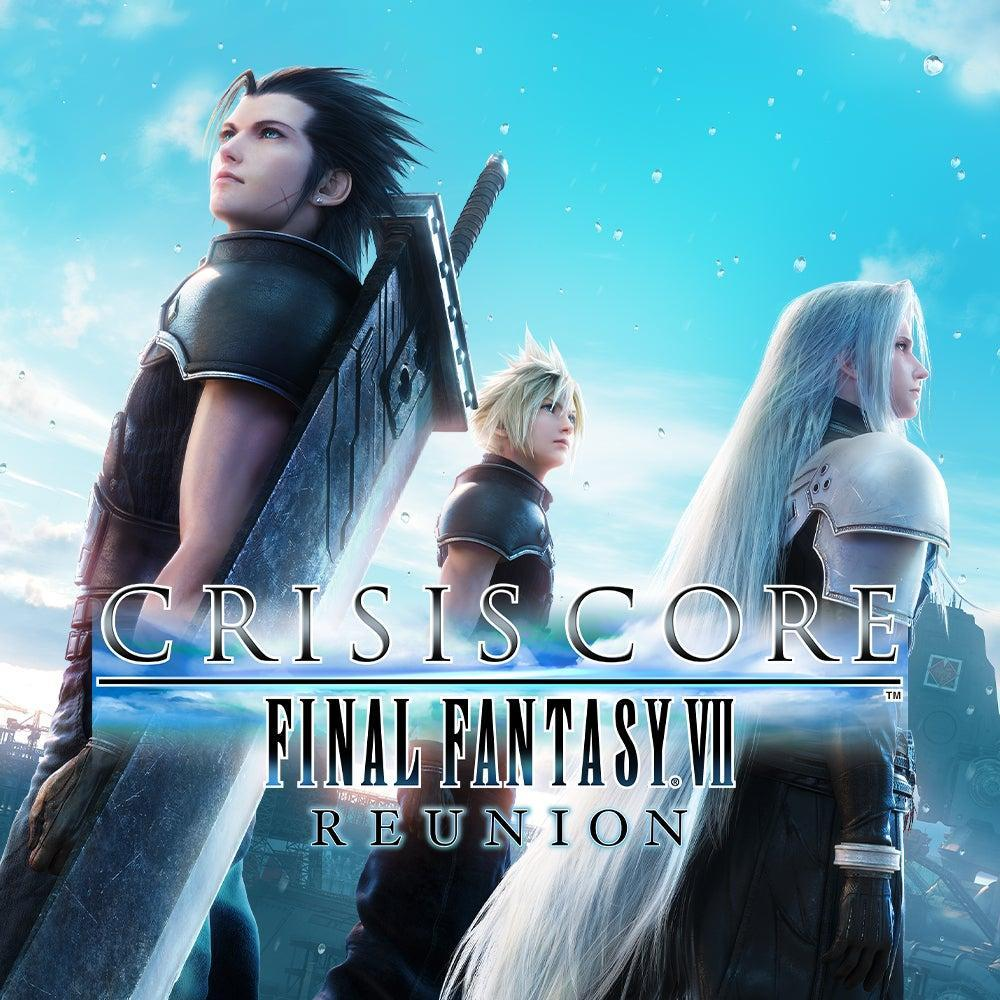-- SINOPSE --
"Final Fantasy VII: Crisis Core" segue Zack Fair, um membro da SOLDIER, enquanto ele desvenda eventos que antecedem "Final Fantasy VII". Enquanto Zack se destaca na SOLDIER, ele descobre a verdade sobre a Shinra, enfrenta a misteriosa organização Genesis e forma laços com Cloud Strife e Aerith Gainsborough. A narrativa culmina na trágica batalha de Zack contra um exército Shinra, revelando detalhes cruciais que moldam os eventos do jogo principal.
-- HISTÓRIA COMPLETA --
Final Fantasy VII: Crises Core conta a história de Zack Fair, que é
atualmente um Soldier de segunda classe e se encontra sendo avaliado
em um treinamento por Angeal Hewley, um soldier de primeira classe e
uma espécie de mentor para Zack e o treinamento consiste em lidar com
uma simulação de um sequestro de trem orquestrado por tropas de wutai
no entanto Zack é pego desprevenido por uma simulação de Sephiroth e
acaba falhando, onde Angel afirma que para ter sucesso ele deve sempre
manter em mente os seus sonhos e a sua honra.
Após isso, os dois partem para falar com o diretor da Soldier chamado
Lazar Deus éricos e por lá o mesmos revela que é um mês atrás um outro
Soldier chamado Gênesis havia desertado durante uma missão em wutai e
levado consigo diversos soldiers de segunda e terceira classe e sendo
assim ele os manda até o wutai para lutar na batalha final da guerra
entre midgar e o Wutai, e Angeal afirma para Zack que havia o indicado
para uma promoção de classe.
Ao se aproximarem da Fortaleza de Wutai Angeal conta para Zack um
pouco sobre a sua infância pobre na pequena Vila de banora ao lado de
Gênesis que era o seu amigo de infância e também em como a sua espada
a Buster Sword representa o seu sonhos e a sua honra como um Soldier e
portanto ele sempre evita de usá-la para evitar o seu desgaste.
chegando até o fort Tamblin, os dois decidem se separar e zack
ordenado a se infiltrar na Fortaleza sozinho para servir como uma
distração, porém ele acaba se encontrando com uma jovem chamada yuffie
Kisaragi, a qual se mostra muito Valente e o ameaça e isso faz zack
fingir ser derrotado para agradá-la. Posteriormente Zack é subitamente
abordado por um ataque de monstros, contudo ele é salvo por Angeal,o
qual usa a sua Buster Sword e afirma que a vida de Zack seria um pouco
mais importante do que sua espada e com isso, angeal parte sozinho do
local.E após é que completar a sua missão ele sai em busca de seu
mentor, no entanto, ele é atacado de repente pela invocação de ifrit e
apesar de uma árdua batalha, ele sai vitorioso com ajuda de Sephiroth
e juntos Eles encontram diversos soldados que foram transformados em
cópias de Gênesis devido a uma tecnologia roubada da Shinra.
contudo os dois não conseguem encontrar angeal em lugar nenhum, o que
faz Sephiroth acreditar que ele tenha desertado para o lado de
Gênesis, e com isso os dois Retornam até o quartel general. E de volta
ao Edifício Shinra, Zack ainda se recusa acreditar que o seu mentor
tenha os traído, mas antes que ele possa chegar a uma conclusão ele é
enviado juntamente com o Tseng turks para investigar a vila de banora
em busca de vestígios de Gênesis. uma vez na Vila os dois encontram o
local aparentemente abandonado e com diversos túmulos incluindo o dos
pais adotivos de Gênesis, e no antigo lar de angeal, Zack que encontra
a mãe do mesmo chamada Gillian Hewley, a qual informa não saber o
paradeiro atual de Angeal.
Tseng e Zack Então partem até uma fábrica de suco de maçã a qual
Gênesis estava usando como base de operações, no entanto o embate dos
dois é interrompido com a chegada de Angeal e posteriormente Tseng
relembra de que a Shinra planeja destruir a Vila para esconder os
eventos do público em geral, e esse fato faz Zack correr de volta até
Gillian com esperanças de tirar ela da Vila a tempo. porém ela já se
encontra sem vida e com angeal parado ao seu lado, o que faz Zack
ficar furioso com a ideia de seu mentor ter finalizado a própria mãe e
o questiona onde estava sua honra, porém angeal se recusa a responder.
Nessa hora Gênesis reaparece e invoca Bahamut para lutar contra Zack e
chama a si mesmo de monstro, criando uma única Asa Negra e Voando para
longe enquanto Zack se reencontra com Tseng e parte com uma aeronave
da Shinra pouco antes da Vila ser destruída.
De volta ao Edifício da Shinra, Zack é promovido formalmente a soldier
de primeira classe e pouco tempo depois o exército de Gênesis lança um
ataque contra a Shinra, com isso Zack abre caminho pela cidade e ajuda
os turks Tseng, Rude e Reno, além de resgatar a turk cissnei em seu
caminho para o reator mako número 5, onde Sephiroth diz que Angeal
havia sido localizado e apesar de Zack estar receoso em enfrentar o
seu antigo mentor, Sephiroth afirma que pretende deixar Angeal escape
antes que a Shinra o encontre. Uma vez lá os dois encontram monstros
que tem o rosto de Angeal em seus corpos, algo semelhante as cópias de
Gênesis, e Eles encontram alguns documentos sobre o denominado projeto
G com Ramo do projeto jenova que havia criado Gênesis e Angeal, mas o
projeto foi considerado um fracasso; Além disso Sephiroth acredita que
o g significa projeto Gênesis e descobre de que Gênesis está sofrendo
de degradação e morrendo lentamente por causa das circunstâncias de
seu nascimento.nessa hora Sephiroth relembra um exercício de
Treinamento antigo entre ele Angeal e Gênesis no sistema de realidade
virtual da Shinra e na simulação o conflito entre Sephiroth e Gênesis
acabou saindo do controle, o que levou Angeal a intervir e Gênesis um
ferimento no ombro e mais tarde receber uma transfusão de sangue de
Angeal, uma vez que o sangue de Sephiroth é incompatível e essa
transfusão for a supervisionada pelo Doutor hollander,um ex-cientista
da Shinra responsável pelo projeto G, e foi essa ferida que acabou não
cicatrizando e dando início a degradação de Gênesis.
Sephiroth e Zack então descobrem que Gênesis uniu as forças com
hollander devido o mesmo afirmar ser capaz de curá-lo, mas na
realidade está usando secretamente para obter uma vingança pessoal
contra a Shinra. Uma batalha é então iniciada e enquanto os Gênesis
confronta Sephiroth, Zack tenta capturar hollander no reator mako mas
Angeal chega e mostra a Zack a sua Asa Branca dizendo que ele havia se
tornado um monstro onde Zack até tenta o convencer do contrário e se
recusa a lutar,no entanto Angeal de acerta Zack e o faz cair nas
favelas de Midgar. Caindo diretamente na igreja da favela do Setor 5
Zack desaba sobre o canteiro de flores cuidado por uma jovem chamada
Aerith Gainsborough e durante a conversa deles os dois acabam se
aproximando, com Zack a revelando de que é um Soldier e a dando a
ideia de vender algumas das suas flores para ao mesmo tempo alegrar
Midgar e ganhar algum dinheiro, porém a conversa dos dois é logo
interrompida quando o Zack é chamado para retornar até a base pois
Genesis já estava preparando um novo Ataque ao Edifício Shinra e dessa
vez o ataque tem como alvo o professor Hojo -- O chefe do departamento
de ciências da Shinra--.
Enquanto Sephiroth é enviado para proteger o presidente Shinra, Zack é
enviado para ajudar Hojo e Angeal decide mudar novamente de lado e
ajudar Zack. Com isso Gênesis confronta Hojo, o qual o chama de erro e
afirma que um cientista de segunda categoria como hollander Jamais
seria capaz de curar a sua degradação, e ao Angeal e Zack enfrentar
Gênesis o mesmo apenas invoca um Bahamut e Foge voando, deixando assim
Zack lutando contra o inimigo. Posteriormente Zack enviado juntamente
com Tseng para a cidade abandonada de Modeoheim nos desertos frígidos
do continente do Norte, pois a rumores de que Gênesis foi visto por
lá, só que ao chegar perto da região o helicóptero do grupo acaba
sendo abatido pelas forças de Gênesis e Zack e cria uma amizade com um
dos Soldados chamado Cloud Strife onde ambos se dão bem logo de cara
por terem vindo do interior e Zack encoraja Cloud a seguir os seus
sonhos de um dia entrar para Soldier.
Já em Modeoheim, Zack e os demais encontram um armazém abandonado que
estava sendo usado por Gênesis como base, e Zack se infiltra na
instalação bem a tempo de salvar hollander de Gênesis, o qual veio em
busca de Vingança contra hollander devido ao fracasso do mesmo impedir
a sua degradação; uma luta então ocorre entre Zack e Gênesis na qual
Zack acaba saindo vitorioso e Gênesis cai em direção ao fundo do
Armazém, onde ele aparentemente acaba não existindo e Zack parte pela
cidade em busca de hollander que havia escapado. Ao encontrá-lo, Zack
que também percebe que Angeal está por lá protegendo hollander e o
cientista então revela de que Angeal é o verdadeiro sucesso do projeto
G tendo o poder de Gênova de um canal genético bidirecional, capaz de
transmitir o seu genes e absorver os de outros organismos; ele também
explica que o g no projeto G não significa projeto Gênesis, mas sim
projeto Gillian, em homenagem a mãe de Angeal; devido hollander ter
injetado nela células de jênova Na tentativa de criar um humano com
poderes do cetra. E já Gênesis se provou um fracasso pois foi ejetado
com as células de Gillian, resultando em uma versão incompleta do
Poder de jênova levando assim a sua degradação atual; E com isso
Angeal revela que Gillian havia tirado a própria vida por remorso por
ter participado de tal projeto; sendo assim não querendo mais ser um
monstro, Angeal absorve várias cópias diferentes e se transforma em
uma criatura horrível, pois sabia que só assim Zack iria criar coragem
de enfrentá-lo; Zack então mesmo contrariado finaliza O seu antigo
mentor e com as suas últimas forças Angeal transfere a sua Buster
Sword e o seu Legado de honra como um Soldier para Zack e doutor
hollander é capturado fazendo assim com que as três principais ameaças
da Shinra sejam neutralizadas.
Agora com o falecimento de Angeal, Zack assume o seu papel como uma
espécie de força motivadora e a alma da Soldier e faz um discurso para
os novos recrutas, os encorajando abraçar os seus sonhos e proteger a
sua honra. No entanto por dentro ele se sente quebrado e é consolado
por Aerith enquanto os dois continuam a se conhecer melhor; com isso a
Shinra envia Zack para Costa del Sol para umas férias para se
recuperar, enquanto é vigiado de perto pelos Turks E durante o seu
período na praia eles são atacados novamente por várias cópias de
Gênesis, O que faz especular de que Gênesis ainda deveria estar vivo.
posteriormente ele é enviado para Junon onde hollander foi enviado
após ser capturado em Modeoheim e Onde o exército de Gênesis lançou um
ataque em grande escala, contudo Zack acaba chegando tarde demais e
hollander acaba escapando devido a ajuda da recente traição de laser -
O diretor da Soldier -. de volta para midgar, Zack descobre que vários
robôs de segurança da Shinra se rebelaram e estão atacando o cidadãos,
e com isso ele encontra Aerith na igreja do setor 5 sendo emboscada
por esses robôs, mas uma criatura cópia de Angeal a ajuda e faz a sua
morada nas vigas da igreja, o que faz Zack reconhecer a criatura como
uma espécie de Legado de seu mentor.
Após isso Sephiroth e zack recebe a missão de investigar um reator
mako em Nibelheim, pois muitos Monstros foram avistados na região o
que pode significar o envolvimento de Gênesis. E para essa missão
também está escalado o soldado Cloud, uma vez que essa é a sua cidade
natal. Antes de Partir Zack faz uma última visita a Aerith para se
despedir e ajuda a realizar o seu projeto de vender flores, onde ela o
faz prometer que voltaria em breve e o entrega uma lista de desejos
que possue, mas que na verdade conta somente com um item de que ela
gostaria passar mais tempo com ele; sendo assim Sephiroth, Zack, Cloud
e um outro soldado da Shinra chegam até Nibelheim e são conduzidos até
o monte nibel por uma garota da vila chamada Tifa Lockhart e faz Cloud
esconder a sua identidade dos moradores devido ao constrangimento de
não ter conseguido entrar na soldier conforme havia prometido. Uma vez
no reator, o grupo encontra Monstros criados pela super exposição ao
mako e Sephiroth encontra um tanque com o nome de jênova, o mesmo nome
que sempre o disseram ser de sua mãe e nessa hora Gênesis reaparece e
revela que Sephiroth nasceu do projeto jênova S comandada por hojo e
como Sephiroth não consegue criar cópias de si mesmo, ele estaria em
teoria livre da degradação e portanto Gênesis impede um pouco de seu
material genético mas Sephiroth recusa a ajudar o seu velho amigo.
A partir desse momento Sephiroth se torna obcecado por seu passado e
pelo trabalho do projeto jenova e com isso ele passa a se trancar no
porão da mansão Shinra e começa a acreditar de que jenova é uma cetra
e portanto ele seria o seu descendente e o herdeiro legítimo do
planeta e passa a culpar os humanos pela extinção do cetra. Após sete
dias seguidos de Pesquisas intermináveis Sephiroth enlouquece e
incendeia Nibelheim, finalizando com a maior parte da população
incluindo a mãe de Cloud e o pai de tifa, e parte até o reator para
libertar a sua mãe de seu tanque de contenção, chegando a ferir tifa
gravemente no processo, No entanto Zack o seguiu até lá e tenta
detê-lo mas acaba sendo derrotado, só que nessa hora quem surge por lá
é Cloud furioso Com tudo o que Sephiroth havia feito a sua cidade e
com aqueles que ele se importava e ao pegar a Buster Sword Cloud o
acerta desprevenido e durante a batalha Cloud consegue Apesar de muito
ferido jogar Sephiroth no Life Stream junto com a cabeça de jenova que
o mesmo estava carregando. Porém já sem forças, Cloud desaba ao lado
de Zack e pouco tempo depois o professor hojo chega até o local com
uma equipe da Shinra e captura os dois para os usar como cobaias para
testar o seu novo experimento de criar Clones de Sephiroth e comprovar
a sua teoria da reunião; com isso Zack e Cloud são infundidos com as
células de Sephiroth, Mas são considerados falhas e deixa os dois
dormindo em tanques por quatro anos até que Zack seja acordado por
algo que parece ser Angeal e como o Zack é um Soldier, Ele é bem
resistente ao mako, no entanto Cloud se encontra em estado catatônico
o que faz Zack o emprestar um de seus uniformes de soldier de primeira
classe e prometer o tirar da cidade em segurança.
Em sua jornada pelo mundo para escapar da Shinra, Zack se encontra com
cissnei, a qual informa de que a Shinra enviou até os Turks para os
capturar, porém ela se mostra muito relutante em lutar contra ele e
vendo o estado atual de cloud ela empresta uma moto com acento lateral
para eles poderem seguir viagem prometendo que Faria o possível para
despistar os turks. No entanto Zack tem a ideia de viajar para Gongaga
(a sua cidade natal), com o intuito de rever os seus pais, mas cissnei
reaparece para o alertar afirmando que esse era um local muito Óbvio e
que a Shinra estaria de olho; e nessa hora Zack vê ao longe o que
parece ser Angeal, indo até lá ele encontra com Gênesis e hollander o
qual agora também é uma das cópias de Gênesis e após uma batalha Zack
finaliza o cientista e descobre que aquele que ele pensava
anteriormente ser Angeal é na verdade o diretor laser, o qual havia se
transformado em uma copa de Angeal e começado a sucumbir a degradação,
Porém o mesmo herdou o sentimento de Honra e desejo de salvar o mundo
de Angeal e é por isso que ele vem ajudando o Zack. Zack então deduz
que Gênesis estava esse tempo todo ainda escondido nos escombros de
banora e com isso ele pede que laser cuide de cloud enquanto ele vai
resolver as coisas definitivamente com gênesis e com esperanças de
fazê-lo desistir da luta, Zack se reencontra com Gênesis agora já
curado de sua degradação devido às crateras criadas pelos escombros da
Vila estarem inundadas pelo Life Stream, no entanto Gênesis não aceita
a piedade de Zack e parte para combatê-lo no entanto ele é derrotado e
Zack o leva ainda muito ferido de volta até laser e Cloud; contudo ele
logo percebe que laser teve problemas com Soldados da Shinra enquanto
o Zack estava fora, porém ele conseguiu se salvar com a ajuda daquela
mesma criatura que protegeu Aerith há muitos anos atrás, mas com isso
ambos acabam falecendo devido à degradação E conforme a criatura se
dissipa Zack acha com ele a última das 89 cartas deixadas por Aerith
ao longo dos últimos quatro anos e sendo essa a última, pois ela
desistiu de esperar por uma resposta e com isso Zack que fica surpreso
em descobrir que já haviam se passado quatro anos, decide partir o
quanto antes de volta para a midgar para revê-la. Após ele partir do
local levando o Cloud consigo, Nero e o weiss, os futuros líderes do
Deep Ground chegam até lá e levam Gênesis inconsciente para outro
lugar com esperança de que o mesmo se una a eles.
Em seu caminho para Midgar, Zack conversa com Cloud o contando um
pouco de sua história e sobre os seus planos de se tornar um
mercenário em midgar, no entanto antes que eles pudessem entrar na
cidade o exército da Shinra já estava a sua espera. Embora Zack lute
bravamente ele já se encontra muito exausto de seus recentes conflitos
e acaba sendo mortalmente ferido em combate sendo deixado em um
precipício com Midgar ao fundo e ao longe Aerith consegue sentir a sua
vida retornando aos poucos ao live stream; nessa hora Cloud começa a
finalmente se recuperar do seu envenenamento por mako e ainda muito
confuso ele rasteja até o corpo de Zack, o qual Entrega a sua Buster
Sword e afirma que agora os seus sonhos e o seu legado viverão através
de Cloud e com isso Zack se vai. Com todo o envenenamento por mako e o
choque de ver o seu amigo partir na sua frente acabaram deixando a
mente de cloud confusa e como o mecanismo de defesa Ele bloqueia
totalmente os últimos acontecimentos e mescla em sua mente alguns
traços da personalidade e Memórias de Zack; E com isso Cloud Parte
para midgar onde se apresenta como um Soldier de primeira classe e
realiza o plano de Zack de se tornar O Mercenário, dando assim ao
início aos eventos de Final Fantasy 7.
Final Fantasy VII
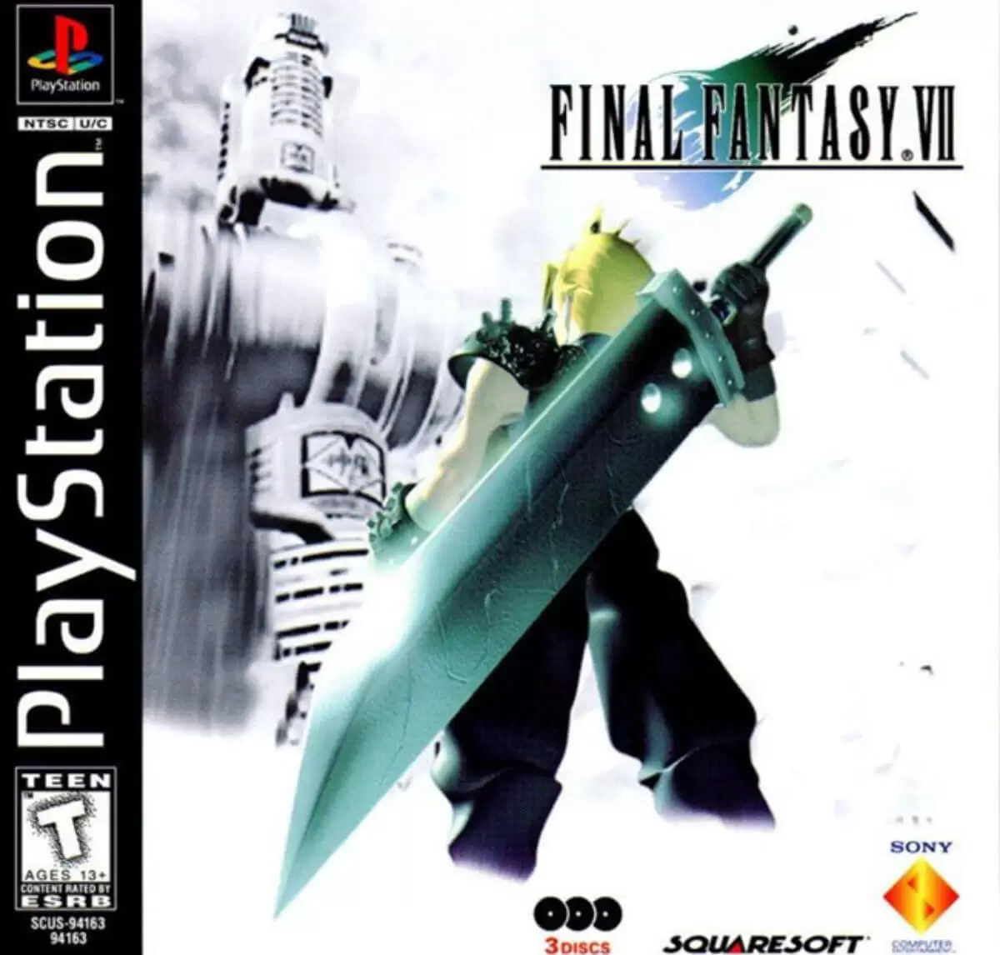-- SINOPSE --
"Final Fantasy VII" narra a saga de Cloud Strife, um ex-soldado que se une ao grupo AVALANCHE para combater a Shinra, uma corporação exploradora. A história desvela os segredos do passado de Cloud e sua ligação com o poderoso Sephiroth. Ao longo da jornada, o grupo explora cidades, enfrenta inimigos, e descobre a trama profunda que envolve a energia vital do planeta, o Lifestream. O enredo atinge seu clímax quando Sephiroth ameaça destruir o mundo usando Meteoro. Os heróis enfrentam desafios épicos, confrontando seus próprios dilemas pessoais.
-- HISTÓRIA COMPLETA --
Final Fantasy VII: Dirge of cerberus
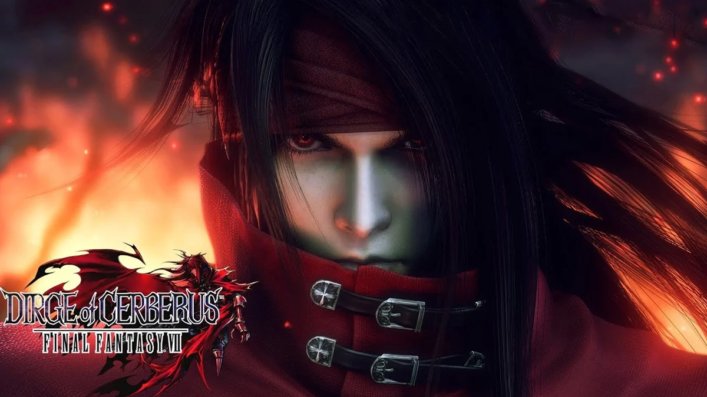-- SINOPSE --
Dirge of Cerberus: Final Fantasy VII é uma sequencia que se passa 3 anos depois dos acontecimentos de Final Fantasy VII e um ano após os acontecimentos de Final Fantasy VII: Advent Children. É um jogo de tiro em terceira pessoa, o único jogo desse tipo na série Final Fantasy. O jogo revela mais sobre o passado de Vincent Valentine e conta a história de sua batalha com um grupo de SOLDIERs conhecidos como Deepground.
-- HISTÓRIA COMPLETA --
Dirge of Cerberus conta a história de Vincent Valentine durante os
eventos finais de Final Fantasy vii enquanto meteoro estava se
direcionando para o planeta, Vincent e yuffie se encontram ajudando a
evacuar a cidade de midgar, contudo Vincent tem a estranha sensação de
que deveria Verificar novamente o corpo de Hojo Por garantia e uma vez
chegado aos controles do Canhão Vincent se surpreende ao descobrir de
que Hojo ainda possuía sinais vitais, mas antes de poder finalizar um
raio atinge o local e o corpo de Hojo simplesmente desaparece e
Vincent se vê forçado a fugir de lá com yufiie antes de tudo ir pelos
ares.
Cerca de 3 anos depois, Vincent se encontra agora na cidade de Kalm
enquanto reflete sobre seu passado visualizando a imagem de Lucrecia
no estado cristalizado e a cidade que estava recebendo o festival
começa a subitamente ser atacado por um exército fortemente armado os
quais começam a sequestrar muitas pessoas, e conforme Vincent tenta
proteger a cidade, ele é emboscado por dois poderosos indivíduos que
se apresentam como azul e shelke onde os mesmos ordenam que Vincent os
entregue algo que chamam de protomatéria, porém eles logo são forçados
a se retirar com a chegada de Reeve e seu grupo denominado de
Organização Mundial de Regenisis, os quais tem a tarefa de ajudar na
reabilitação do planeta. Sendo assim Reeve explica de que aquele
exército era aliado de um grupo de elite chamado tsviets e de que
precisaria da ajuda de Vincent para os deter; contudo a conversa é
logo interrompida quando os reforços rivais aparecem e acertam Reeve
pelas costas. Mas por sorte essa se revela ser apenas uma fantasia
controlada por caith Sith para reeve não se expor ao Perigo.
Com isso Vincent concorda em o ajudar na luta e Reeve explica de que
aquele exército pertence ao Deepground - um braço militar paralelo que
já havia pertencido a Shinra no passado - porém ele não teria muitas
informações, Pois somente o ex-presidente heidegger Scarlet e Hojo
conheciam a sua existência no ele descobriu recentemente de que o Deep
Ground havia sido criado para fazerem experimentos e formar um
exército de super soldados conhecidos como tvts e que por algum motivo
eles se encontravam sequestrando centenas de pessoas das cidades onde
somente en junon foram capturadas 1200 de uma vez só porém nessa hora
ele subitamente recebem um contato do líder do Deep Ground chamado vi
o qual declara com todas as letras a sua vontade de limpar o mundo de
todos os impuros enquanto os puros seriam preservados para um outro
propósito após Vincent ajudar Reeve a se livrar de alguns cães de
guarda que vinham seguindo o mesmo pede para que Vincent siga em
frente investigue a cidade de Ed criada nas ruínas de midgar Pois
havia rumores de que o Deep Ground estaria se dirigindo para lá na
sequência contudo ao chegar até a cidade Visit percebe de que
estranhamente não havia ninguém por lá nem ao menos os habitantes ele
acaba por conhecer uma cientista da organização chamada shua hui a
qual afirma estar na cidade para fazer uma pesquisa pessoal
posteriormente Vincent parte para investigar e se depara cara cara com
Rosso uma das tvts onde a mesmo revela de que o que Vincent usa para
acessar o poder do Caos dentro de si era na realidade a protom matéria
a chave para controlar algo que ela chama de Ômega sem saída Vincent
Então se V forçado a usar a sua forma de caos para derrotar e a
obrigar a escapar mas ao fazer isso ele acaba ficando tão exausto que
desmaia pensando assim em ter uma nova visão de Lucrécia cristalizada
e se lembrando de uma memória perdida onde Rojo atirava nele e
afirmava de que poderia usar o seu corpo em seu mais novo experimento
após isso Vincent acorda em um tubo de ensaio no laboratório de shua a
qual se surpreende ao descobrir sobre seu gen do Caos e o Pergunta se
ele era alguma cobaia da dout Lucrécia cresent pois essa era a origem
de sua pesquisa mas a sua mente continua uma grande confusão no
entanto shalo afirma não ter acesso completo A essa pesquisa por ela
ser classificada como secreta dentro da Shinra e nunca havia sido
inserida no banco de dados e com a chegada de riv ela revela também de
que pelo pouco que viu nas pesquisas lá também era citado o ômega mas
a discussão do grupo é logo interrompida com um ataque orquestrado
pelo Deep Ground e comandado por azul e shelk a quem shua acaba
reconhecendo com a sua irmã mais nova a qual fora sequestrada pela
Shinra e ainda possuía o corpo de uma criança por causa dos
experimentos porém sh afirma que agora é uma guerreira e tudo que
importa é sua missão nessa hora shua se desculpa por não ter
conseguido a encontrar antes e riv afirma de que ela havia dado tudo
de si incluindo seu braço e seu olho por se colocar em perigo para
localizar o que faz shelk abaixar a sua guarda e os permitir tirar a
sua irmã dali enquanto ela própria enfrenta Vincent e acaba por ser
sedada e capturada porém azul ainda não estava derrotado e logo começa
a enfrentar Vincent ordenando de que o mesmo o entregue a sua protom
matéria mas apesar de a luta não ser nem um pouco fácil pela pele de
azul ser aparentemente impenetrável Vincent consegue o derrotar no
final posteriormente Ele Decide que precisaria retornar até a mansão
da Shinra em nibelheim Pois foi lá que Lucrécia realizava suas
pesquisas e enquanto se direcionava até lá ele se relembra da primeira
vez que se encontrou com Lucrécia com ainda era um jovem membro dos
turks onde ela pareceu por algum motivo preocupada ao saber sobrenome
mas se deram bem no final enquanto isso riv envia Kate City para se
infiltrar no Deep Ground e descobrir mais sobre motivo de as pessoas
estarem sendo sequestradas e por lá ele descobre que elas estão sendo
usadas para alimentar uma criatura chamada Ômega porém ele acaba sendo
descoberto por outro tvet chamado Nero de volta a Vincent o mesmo
desce até a biblioteca no porão da mansão e se depara com o holograma
de Lucrécia a qual revela sobre a descoberta Inicial durante suas
pesquisas de que o ômega pretende acabar com toda a vida no planeta
para devolver ao lifestream E com isso gerar um novo através do espaço
onde o caos seria o seu contraponto e embora Lucrécia o Deixe os dados
de sua pesquisa ela se desculpa com ele por tudo o que havia feito
quem surge na sua frente agora é novamente o Russo a qual explica de
que o único objetivo daqueles criados no Deep Ground era de completar
a visão de seu Líder vice não se importando com o que aconteceria no
mundo e em meio à Batalha ela o distrai com Robô Aranha e o pega
desprevenido para roubar a sua protom matéria Vicente então começa a
ficar fraco e perder o controle interno de suas habilidades mas quando
Russo estava pronta para o executar ele é salvo na última hora por
yufi que destrai Russo e consegue tirar um Vincent desacordado da
mansão nessa hora Vincent tem uma nova visão sobre o seu passado dessa
vez sobre como ele foi incapaz de tomar uma atitude quando descobriu
que Lucrécia pretendia usar o próprio filho ainda em gestação para
fazer parte do temível projeto Gênova o que o faz se sentir culpado
até hoje por não ter dito nada posteriormente Vincent acorda em um
veículo com yff ao seu lado a qual revela somente ter o encontrado por
estar auxiliando a organização e eles ouvem através de riv Sobretudo o
que ele havia descoberto no Deep Ground e que precisariam se apressar
para organizar um ataque enquanto isso no centro da organização sh
aproveita um descuido de sua irmã para recuperar as suas armas e
tentar escapar tudo isso enquanto de Ground invadia novamente para
poderem recuperar azul o qual ainda estava vivo e havia assumido a sua
forma bestial de bahamut contudo ao Shel conter a sua transformação o
mesmo afirma de que ela não era mais necessária uma vez que só
precisavam de seus poderes para recuperar a protom matéria sendo assim
Azul planeja a finalizar para evitar de que as suas informações caiam
em mãos erradas mas ao shelk imobilizar shua Tenta tirar de lá
juntamente com Vincent mas acaba ficando para trás para garantir que a
sua irmã escape a tempo acabando por ficar tão ferida que entra em um
estado de coma posteriormente Vincent conforta riv afirmando que ele
não tinha como prever o ataque e que deveria erguer a cabeça e ele
também tenta confortar shelk ao afirmar que a sua irmã somente fez
isso pois a amava e enquanto ele falava isso se se lembra de uma vez
em que ele fez um pique-nique no Parque juntamente com Lucrécia no
entanto os poderes de shelk são capazes de alguma forma se conectar às
Memórias de Vincent e ela também pode sentir isso mas antes que eles
possam falar sobre riv Ressurge e afirma de que Vincent estava certo e
não era hora de desistir agora além de revelar que os dados que ele
havia recuperado na mansão sobre as pesquisas de Ômega estavam
incompletos contudo sh afirma de que a outra parte da pesquisa se
encontrava na realidade dentro de sua rede neural Pois foi assim que
ela conseguiu localizar a protom matéria Mas além dos dados a
consciência de Lucrécia também começou a afetar a sua mente e ela
então se propõe aos fornecer a sua parte dos dados com esperança de
que isso possa aliviar a sua mente nessa hora Sid chega até a central
juntamente com uma Frota de naves para poder os ajudar a se preparar
para o contra-ataque ao Deep Ground e para tanto outros antigos
Aliados logo chegam para os auxiliar em batalha tais como barret tifa
e o próprio Cloud os quais serviriam como Esquadrão terrestre do
ataque enquanto isso sh entra em seu aparelho de mergulho de rede
sináptica o que dá os demais o restante da pesquisa de Lucrécia
descobrindo assim que o ômega era na realidade uma Weapon criada pelo
próprio planeta como último recurso em caso de não haver mais salvação
para se pegar toda a vida ainda restante e a levar até outro planeta
para preservação ou seja em teoria não haveria nada para se preocupar
em relação ao Ômega já que ele é apenas um sistema de defesa do
planeta caso tudo desse incrívelmente errado no entanto o TIP Ground
está tentando O Despertar mais cedo e para isso que servem os
sequestros pois ao eliminar aquelas pessoas ao mesmo tempo eles querem
enganar o lifestream a pensar de que alguma espécie de Juízo Final
estava em andamento e tudo isso ocorrendo embaixo das ruínas de midgar
no não mapeado reator Zero O que os faz criar o plano de a equipe de
solo e também a decide destruírem os demais reatores para interromper
o seu fluxo de maco enquanto Vincent deveria se assegurar de não
deixar os vets entrar em seu caminho enquanto isso shelk conversa com
Vincent e afirma se sentir muito cansada após o procedimento e o
informa de que dentro de sua mente havia começado uma desfragmentação
dos dados de Lucrécia o que a fez ter várias Memórias de Lucrécia
junto de Vincent E conforme ele começa a perder o controle de seus
poderes por não ter mais a protom matéria uma visão de Lucrécia que
ele tem ao ver shelk o faz se acalmar ao menos por enquanto e
posteriormente shelk entrega também para Vincent um celular para eles
se comunicarem no campo de batalha e fica surpresa ao ver que pela
primeira vez alguém estava feliz com a sua ajuda posteriormente tanto
as batalhas pelos céus e por terra são iniciadas e Vicent acaba por
pousar em um ponto um pouco distante do campo de batalha mas bem mais
perto da base do Deep Ground e e com isso ele enfrenta e derrota Rosso
a qual se nega a reconhecer a sua força e prefere dar um fim a si
mesma do que admitir que perdeu mais à frente ven de chega até os
arredores do antigo prédio da Shinra no entanto ele começa a novamente
ter problemas em controlar os seus poderes o que faz shelk afirmar de
que o caos era uma entidade própria que estava dentro dele e que sem a
protom matéria estava deixando a sua mente instável e ela o pede para
Que tente lutar contra isso mas nessa hora a comunicação deles é
interrompida por uma falha do equipamento indo investigar a sala de
máquinas shelk se depara com Nero a esperando o qual afirma já ter
acabado com vários tripulantes para coletar as suas almas mas
revoltada sh começa ao enfrentar afirmando que não vai mais o deixar
fazer mal a ninguém ali pois agora havia pessoas contando com ela de
volta a Vincent Claudia e os demais entram em contato com ele e
afirmam que já não conseguem mais falar com a nave de Sid há 15
minutos e o desejam sorte em sua Batalha Contra o Deep Ground o
enviando assim o mapa da Shinra para ele poder se guiar sendo assim
Vincent avança e é forçado agora a lutar contra azul o qual leva até o
seu limite ao Lutar em sua forma de bamu o que força Vincent a
contra-atacar e o executar com seus poderes libertos do Caos e nessa
hora quem surge por lá é Nero mas o mesmo se recusa a lutar contra o
caos apenas deixando o telefone de shelk lá e partindo enquanto
tentava recuperar a sua mente Vincent tem um outro flashback sobre o
seu passado dessa vez sobre Lucrécia ter feito algo em Vincent depois
de Rojo já ter feito as suas próprias experiências em seu corpo o que
diverte Rojo que afirma que Vincent amava ela e agora era apenas a sua
cobaia de volta à realidade Vincent agora voltou à sua forma humana e
após encontrar o telefone de shelk ele avista finalmente as entradas
secretas do Jeep Ground e por lá ele se depara com diversas criaturas
e Soldados banhados a maco em volta do reator zero nessa hora os
poderes de escuridão de Nero tentam o dominar porém Shock que também
estava Prision lá pede para que ele tente manter o foco e permanecer
no controle contudo a própria magia que ela estava usando para não ser
totalmente consumida está começando a se esgotar e talvez ela não
tenha muito mais tempo com isso shelk tem uma nova memória de Lucrécia
dessa vez ainda antes de conhecer Vincent na época que ela trabalhava
ao lado de seu pai grimor Valentine e os dois visitaram a gruta onde
ele afirmou de que um dia o caos iria despertar e posteriormente
enquanto estava animada para concluir a pesquisa uma energia escura
relacionada à protom matéria acaba escapando de seu tubo de ensaio e
infelizmente acabando com a vida de grimor o qual apenas pede para que
ela Diga ao seu filho que sente muito em meio a essas memórias shelk
também se lembra de uma memória propriamente sua o onde ela e shua
estavam visitando o túmulo de sua mãe e shua a confortou dizendo de
que ficaria tudo bem pois elas se reencontraram algum dia no
livestream e uma visão da própria xaloa aparece agora na sua frente
perguntando se estava tudo bem em ela também ir para o lifestream mas
sh que diz que elas ainda TM de compensar o tempo perdido e começa a
chorar depois de muito tempo sem ter demonstrado qualquer emoção de
volta a Vincent o mesmo agora é confrontado por Nero o qual afirma de
que iria deixar Vincent sair em pun Mas ele já estava se tornando um
problema para os planos de seu irmão va e que não poderia deixar ISO
ocorrer e ao confirmar de que shelk estava presa dentro dele Visit
agora se vê mais focado do que nunca em o derrotar para poder a
resgatar durante a batalha Nero começa a novamente tentar envolver
Vincent em sua energia escura mas dessa vez o mesmo não tenta lutar
pois o seu plano esse tempo todo era entrar lá e resgatar shelk e
posteriormente com a chegada de yufi Nero simplesmente vai embora
afirmando de que seu irmão estava o chamando após colocarem shelk em
uma cápsula para se recuperar yuf diz para Vincent de que veio para
ajudar e pede para que ele vá enfrentar Nero E vais enquanto ela li
daria permanentemente com o reator Antes de Partir Vincent olha para
shelk e a ressonância de ambos traz novamente o passado à tona dessa
vez sobre o tempo que ele havia descoberto sobre o envolvimento de
Lucrécia com seu pai onde ela se desculpa por tudo e eles acabaram se
separando por ela se sentir muito culpada embora ele próprio nunca
tenha culpado o que acabou fazendo ela se aproximar de Rojo e apesar
de a amar Vincent tentava convencer a si mesmo de que enquanto ela
estivesse feliz estaria tudo bem posteriormente iuf desliga o reator e
se reencontra com Vincent mas ao irem ao encontro de v ficam surpresos
em encontrar somente o seu corpo sem vida no entanto Nero aparece e
afirma de que aquilo era apenas temporário Pois uma nova vida estava
surgindo dentro dele e logo Ômega e ia despertar Vincent então está
convencido a impedir queo ocorra mas Nero novamente os envolve em sua
escuridão e apesar de Vincent conseguir se sobressair e resgatar yufi
Nero ainda tenta o enviar para uma espécie de outra dimensão para
impedir que Vincent faça mal ao seu irmão mesmo com Vincent saindo
vitorioso essa distração da luta fora o suficiente para V despertar
completamente mas mas após Nero cambalear até ele va o apunhala e o
joga de lado como se não fosse nada nessa hora vai se gaba de agora
ter o poder de Ômega e revela que agora ele e Visit haviam se
reencontrado após 3 anos pois na realidade ele era Rojo o qual havia
virtualizado a sua mente antes de sucumbir e é colocado em uma
realidade virtual e eventualmente os dados de sua mente se reuniram
para dominar esse corpo sendo assim rogo admite que nunca havia levado
a sério as pesquisas de Lucrécia mas quando viu Vincent se transformar
em caos bem na sua frente ele pensou que se Vincent poderia manifestar
o caos ele próprio poderia ser o ômega no entanto um corpo comum não
poderia conter tal poder e o único motivo de Vincent fazer isso era
porque os seus experimentos haviam Tornado quase indestrutível com
isso ele colocou o seu plano em ação e se lembrou do Deep Ground onde
super soldados de Elite eram criados para shinha através de
treinamentos em realidade virtual e Rojo aproveitou essa deixa para
possuir o corpo de v enquanto ele estava online convencendo assim Nero
e todos os outros civets a concretizarem o seu plano de fazer Ômega
surgir através do lifestream E assumir o seu corpo furioso Vincent
tenta fazer o possível para o derrotar e por um fim a esse plano
doentio mas devido à força desumana de v Vincent não é capaz de o
derrotar nem mesmo quando ele tenta invocar o seu poder do Caos nesse
momento sh é capaz de criar um holograma de Lucrécia na frente de
Vincent o encorajando para que o mesmo assuma o controle do caus ao
invés de deixar que ele o consuma E com isso Vincent consegue acessar
os seus poderes Enquanto mantinha sua forma humana e dessa vez
derrotar V mas após fazer isso uma forma sombria de Nero subitamente
Ressurge e consegue expulsar Rojo da mente de seu irmão e decide assim
se fundir à Vá para poderem na sequência se fundir ao próprio
lifestream para criar a versão definitiva de Ômega enquanto Vincent é
elevado junto na onda e acaba se transformando em caos enquanto isso
shelk se pergunta se conseguiria de algum modo interagir com
livestream afirmando para si mesma de que era grata por estar
carregando consigo não só os pensamentos mas também os desejos e
sonhos de Lucrécia E conforme ela mergulha na rede sináptica se
encontra em grandes dificuldades para avançar mas Aparentemente o
espírito da própria Lucrécia a ajuda a recuperar a a protom matéria e
chegar até o coração de Vincent nessa hora Vincent é capaz de se
lembrar de mais uma parte de seu passado se dando conta de que
Lucrécia não havia realmente o feito de cobaia e sim tentado salvar
dos experimentos de Rojo ao implementar o caos dentro dele descobrindo
de que a protom matéria era a única forma de o conter porém ao longo
de suas tentativas ela ficou cada vez mais frustrada e angustiada
conforme o tempo passava muito por causa das células de Gênova e
também por ter saf tirado dela logo após nascer o que a fez carregar
uma versão digital de si mesma e simplesmente abandonar o seu
laboratório E com isso Shock utiliza esses dados que havia adquirido
para fazer Vincent se conectar ao coração de Lucrécia a qual conversa
com ele dentro de sua mente e revela de que apesar de perceber
tardiamente os seus sentimentos por ele ela sabe que cometeu muitos
erros e o machucou muito somente conseguindo se desculpar por ter
bagunçado a sua vida mas afirma de que ao menos estava feliz por ele
ter sobrevivido e de volta à realidade ele assume novamente o controle
de seu corpo e é capaz de salvar shelk e criar uma nova arma que o
ajudaria na batalha final e com isso ele conta com o apoio de todos os
seus amigos para destruir os reatores e quebrar a barreira que o
levaria até Ômega sendo assim Visit enfrenta cara a car vais de uma
vez por todas mas mesmo após vencer o ômega ainda não aceita sua
derrota e começa a bater as suas asas para ascender aos céus o que
acabaria por destruir o mundo e em um último esforço desesperado
Vincente capaz de o deter no último momento acabando por desaparecer
no processo passado cerca de uma semana shelk agora vive com os demais
amigos de Vincent e começa a aprender após 10 anos o que era viver por
si mesma e Vincent é visto novamente de volta à Gruta onde o corpo de
Lucrécia estava cristalizado e ele agradece por tudo o que fez por ele
no passado e também agora o que faz uma única lágrima escorrer de seu
rosto cristalizado e conforme Vincente parte e se reencontra com shelk
os dois se cumprimentam com um sorriso e observam o horizonte mas em
outro ponto Gênesis é capaz de localizar e recuperar o corpo de Vaz
afirmando de que seu trabalho ainda não havia acabado.
Final Fantasy VII: Advent children
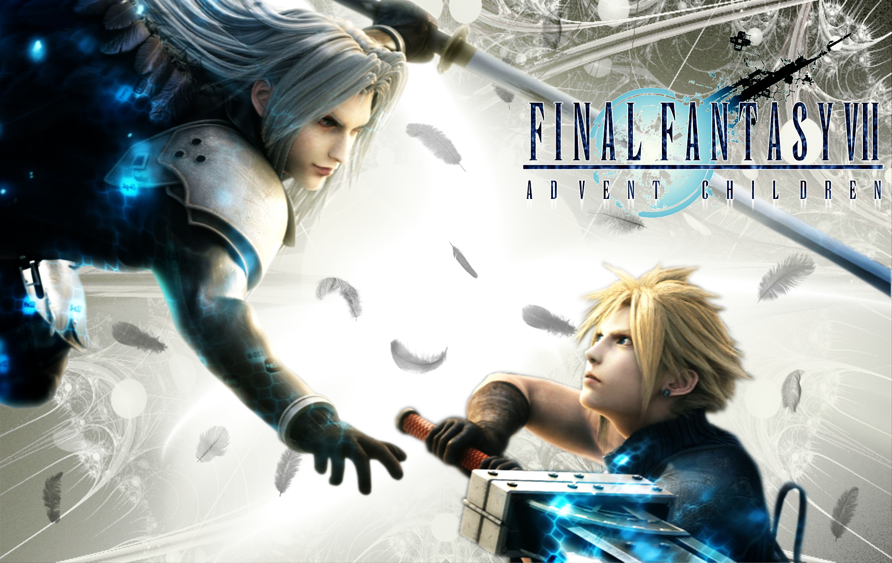-- SINOPSE --
"Final Fantasy VII: Advent Children" ocorre dois anos após os eventos do jogo original. A trama segue Cloud Strife, que enfrenta uma nova ameaça chamada Kadaj, um seguidor de Sephiroth. Com o surgimento do Geostigma, uma doença misteriosa, Cloud é forçado a confrontar seu passado e se reunir com seus antigos aliados para impedir a ressurreição de Sephiroth. A narrativa culmina em batalhas intensas, explorando temas de redenção, amizade e superação pessoal.
-- HISTÓRIA COMPLETA --
Lifestream é uma substância etérea existente no planeta, é o que dá
vida ao mundo e a tudo que nele existe. Shinra, uma empresa de energia
elétrica, encontrou uma forma de usar o Lifestream como fonte de
energia chamada Mako, por causa disso, Midgar prosperou e seus
habitantes viviam confortavelmente, mas isso só era possível as custas
da vida do próprio planeta. A ação da Shinra gerou o descontentamento
de um certo grupo chamado Avalanche e para alcançar seu objetivo, a
Shinra usou seu poder na tentativa de impedir que qualquer um
atrapalhassem seus planos. Shinra tinha uma força especial chamada de
Soldier, esses guerreiros possuíam células de Jenova em seus
organismos, o que os tornavam super soldados, com força, agilidade e
resistência sobre-humana e afinidade com o uso de Matéria. Jenova foi
uma calamidade que veio dos céus há muito tempo que tentou destruir o
planeta, Jenova, cujo Shinra acreditava erroneamente ser um
remanescente da raça dos Cetras, uma antiga civilização que possui
ligação com o Lifestream, foi utilizada em um projeto chamado Projeto
Jenova que consistia em criar um ser humano hibrido, desse projeto
surgiu um Soldier chamado Sephiroth, um guerreiro excepcional, o mais
poderoso dentre os soldados da Shinra, porém, quando Sephiroth
descobriu sua origem, ele passou a odiar a Shinra e com o tempo,
passou a odiar tudo. Sephiroth foi consumido pelo ódio e levou sua ira
contra todos que ficavam em seu caminho. Batalhas intensas foram
travadas e incontáveis vidas foram sacrificadas, dentre elas, uma que
se tornou parte do Lifestream. Até que o dia do juízo chegou e o
próprio planeta teve que lutar pela sua sobrevivência, absorvendo
todos confrontos, ambição e tristeza, o planeta os consumiu e utilizou
o Lifestream como uma arma. Esses foram os eventos de dois anos atrás.
Mas o planeta pagou um preço alto pela sua sobrevivência, Geostigma é
uma praga que se espalhou por Gaia(Terra) após a batalha contra
Sephiroth, essa doença não tem cura e pode infectar qualquer um já que
ela está presente no Lifestream, o Geostigma é uma doença que afeta o
sistema imunológico e consome a vida das pessoas aos poucos, por causa
disso, as crianças são mais afetadas, apesar do Geostigma não ser
contagioso, grande parte das pessoas age como se fosse, então aqueles
que foram contaminados são excluídos da sociedade e deixados para
morrer nas ruas e becos da cidade. Dizem que o Geostigma surgiu da
fúria do próprio planeta contra a humanidade por tudo o que eles
fizeram, mas há quem acredite que o planeta está correndo um novo
perigo. Final Fantasy VII Advent Children, nossa que nostalgia desse
filme, como eu não tenho nem 350 reais e nem um PS5 para jogar o Final
Fantasy 7 Rebirth, eu vou fazer o que eu consigo que é assistir filme
para matar a nostalgia desse clássico incrível que é o filme de Final
Fantasy, se você estava no youtube la no final dos anos 2000 começo de
2010, você, assim como eu, deve ter assistido várias cenas desse filme
ao som de Linkin Park e como uma forma de surfar no hype do lançamento
da parte 2 do remake de Final Fantasy 7, porque não trazer a história
desse filme que se passa dois anos após o fim do jogo original, então
se você gosta desse tipo de conteúdo, considera se inscrever, trago
aqui a história de vários filmes, animes e mangás e também se puder
dar aquela força, compartilha o vídeo porque isso ajuda demais no
crescimento aqui no Youtube, agora sem mais enrolação bora para o
vídeo. Duas semanas antes, os antigos membros da Turk, grupo de guarda
costa do ex-presidente da Shinra, Rufus, foram até a Caverna do Norte
para recuperar a cabeça de Jenova, Rufus acredita que existe uma
ligação entre o Geostigma e a entidade alienígena Jenova, para tentar
redimir seus erros do passado, Rufus deseja entender a origem dessa
doença para que ele possa desfazer o caos que a sua empresa Shinra
trouxe ao mundo. Na cratera do Norte, Tseng, o líder dos Turks e
Elena, outra integrante do grupo, vasculhavam o local da queda do
meteoroo em busca de Jenova, porém sua busca foi interrompida pela
aparição de três novos inimigos, Kadaj, Loz e Yazoo, esses são os
Remanescentes de Sephiroth. Eles foram formados como uma manifestação
física de Sephiroth, cada um representa um fragmento de sua vontade.
Kadaj é a representação da raiva e do ódio, Loz é a representação da
força física e velocidade e Yazoo representa o carisma e o
comportamento indiferente. Eles são avatares criados pelo Sephiroth e
servem para permitir sua ressurreição física no mundo. Seu objetivo é
encontrar a “Mãe” e se tornar um com ela para que conquistem o
planeta. Rude e Reno chegam na Caverna do Norte para dar apoio a Tseng
e Elena e uma batalha acontece contra os Remanescente, porém, apenas
Reno e Rude conseguem escapar do local levando junto aquilo que os
Remanescente estavam procurando. Enquanto isso, lá na cidade de Edge
construída a leste de Midgar após a destruição por causa do Meteoro,
Tifa montou o seu novo bar, Sétimo Céu e está morando junto com Cloud
que nunca está em casa e duas crianças que ambos adotaram como seus
filhos, Marlene, que antes era protegida por Barret que precisou ir
embora para resolver assuntos do passado, e Denzel. Dois anos atrás,
Denzel vivia com seus pais no Setor 7 de Midgar, depois da destruição
do reator Mako 1, a Shinra planejou um ataque que destruiria
completamente o setor 7 para colocar a culpa no grupo Avalanche, o pai
de Denzel que trabalhava para Shinra descobriu os planos da empresa e
tentou levar sua família para o Setor 5, porém a mãe de Denzel ficou
para trás para avisar seus vizinhos e amigos da iminente destruição,
enquanto Denzel e seu pai iam embora, eles encontram um homem chamado
Arkham que trabalha junto com o pai de Denzel, Arkham também estava
fugindo do setor 7, o pai de Denzel deixa ele junto com Arkham e volta
para procurar a sua esposa. Algumas horas depois, o ataque ao setor 7
acontece, o local todo é destruído e Denzel acabou perdendo seus pais.
Sem saber para onde ir, Denzel passou a vagar pelas ruas de Midgar até
que um dia ele encontrou uma mulher chamada Ruby, de começo, Ruby
pretendia levar Denzel de volta para casa, mas ao saber da história do
garoto, Ruby adota Denzel e ambos passam a viver juntos. Quando o
Meteoro surgiu no céu, Ruby sabia que não havia lugar seguro se o
meteoro atingisse o planeta, então ela escolheu continuar em casa até
que o fim chegasse, Denzel decidiu fazer companhia para Ruby até o
último momento. Durante a batalha final, o Lifestream evitou o impacto
do meteoro, mas a população ainda sofreu com as consequências desse
confronto. Quando o Lifestream surgiu, a casa de Ruby se encheu de
luz, Ruby tentou proteger Denzel, mas os dois foram pegos na explosão
de energia, na manhã seguinte, Denzel acordou e encontrou a casa
destruída, não só a deles, mas todas as casas ao redor estavam no
mesmo estado, Ruby, sobreviveu, mas estava extremamente fraca, mal
conseguia se levantar, Ruby agradece por Denzel ter ficado com ela
todo esse tempo, ela tem um filho que trabalhava para Shinra, mas que
quase nunca vai visita-la, por isso, os momentos que ela pôde passar
ao lado de Denzel significaram muito para Ruby, no fim, Ruby morre
sendo uma das primeiras vítima do Geostigma. Não muito depois da morte
de Ruby, um homem chamado Gaskin encontrou Denzel, esse homem estava
levando os sobreviventes para as favelas de Midgar, Gaskin estava
junto com outras crianças que também ficaram órfãos, após eles
ajudarem a enterrar Ruby, todos partiram juntos. Com o fim do
confronto contra Sephiroth, o Geostigma rapidamente se espalhou, por
causa da atual situação de Midgar, muitas crianças passaram a viver
sozinhas em condições precárias, o que ajudou a espalhar o Geostigma
com rapidez, apesar de não ser contagioso, as crianças, por possuírem
um sistema imunológico mais fraco, acabavam sendo atingidas pela
doença. Nas favelas, Denzel entrou para um grupo de crianças órfãos
que se denominavam os Catadores do Setor Sete, esse grupo reunia
sucatas nos escombros do lugar para vender eles eram auxiliados por
Gaskin, porém, o Geostigma não afeta apenas crianças e Gaskin também
contraiu a doença. O Geostigma afeta cada pessoa de forma diferente,
alguns conseguem viver por mais tempo que outras, Ruby morreu
praticamente no momento em que contraiu a doença e Gaskin morreu um
mês depois. Aos poucos os Catadores do Setor Sete foram perdendo seus
membros, seja para o Geostigma, ou porque decidiram abandonar a vida
de catador por causa da escassez da comida, no final, apenas Denzel e
seu amigo Ricks permaneceram no grupo, porém após uma briga, os dois
amigos se separaram e Denzel decidiu viver sozinho. Denzel passou a
vagar pelas favelas do Setor 5 em busca de comida, até que ele chegou
em uma certa igreja, onde estava a moto Fenrir, ao se aproximar,
Denzel encontrou um celular ligou para o primeiro número que viu, o
Sétimo Céu, do outro lado do telefone, Tifa atendeu imaginando que
seria uma ligação do Cloud, porém ela ouve o choro de Denzel e
questiona quem seria o garoto, nesse momento, devido as condições que
Denzel estava vivendo, ele acabou contraindo o Geostigma também, por
sorte, Denzel foi encontrado por Cloud que o levou de volta até Edge e
partir daí, ele passou a viver junto com a Tifa e Cloud buscou
incansavelmente uma forma de curar Denzel dessa doença. De volta ao
presente, Tifa recebe uma ligação de Rufus, ele está em busca de Cloud
que apesar de Tifa não saber exatamente onde Cloud está, ela ainda
consegue contatar ele por telefone. No deserto de Midgar, Cloud recebe
a mensagem de Tifa, ela avisa que os Turks estão no Healen e que eles
têm um trabalho para Cloud, na mensagem Tifa também demonstra
preocupação com seu parceiro. A verdade é que Cloud não está em busca
de uma cura, porque não existe cura para o Geostigma, ele se afastou
da Tifa e dos outros porque ele também foi infectado e não quer que as
pessoas próximas a ele sofram com sua eventual morte, além disso,
Cloud está passando por uma crescente depressão e forte sentimento de
culpa por não ter conseguido salvar duas pessoas importantes para ele
no passado, Aerith e Zack. Enquanto Cloud se dirigia para seu
objetivo, ao longe os Remanescentes o observam. Kadaj, o líder do
grupo, manda Yazoo e Loz atrás do seu “irmão”, a batalha no deserto
começa, os remanescentes invocam Shadow Creepers para atacar Cloud que
utiliza suas espadas para se proteger ao mesmo tempo que se equilibra
em sua moto Fenrir, Loz se aproxima perguntando sobre a “Mãe” deles,
mas Cloud não responde e o conflito continua, os Remanescentes querem
encontrar a “Mãe” a todo custo e acreditam que Cloud está com ela, mas
Cloud apenas ignora os dois enquanto continua na batalha, por causa do
Geostigma, Cloud está em desvantagem, já que seu corpo constantemente
está sofrendo por causa da doença, isso dá vantagem para os
Remanescentes, mas parece que balas não são muito úteis já que Cloud
recebe um tiro no rosto e não acontece nada, Cloud é cercado pelos
Shadow Creppers, mas antes que ele seja atacado, Kadaj manda o grupo
recuar, deixando Cloud para trás sem entender o que está acontecendo.
Pouco antes do fim desse confronto, Kadaj estava conversando com Rufus
por telefone, ele sabe que o ex-presidente da Shinra está com a “Mãe”.
Não muito tempo depois, Cloud chega em Healen Lodge, no esconderijo
dos Turks, ele é recepcionado por Reno e Rude, ambos testam a força do
Ex-Soldier, mas o assunto que eles têm para a tratar é outro. Cloud
fica surpreso ao saber que Rufus ainda está vivo, mas Cloud não tem
interesse em trabalhar com a Shinra de novo, Rufus diz que reconhece
que ele e sua empresa devem muito ao planeta e depois de sua
experiência quase morte, ele não deseja mais continuar no caminho da
destruição, ele se sente responsável pelo atual estado do planeta, por
isso, ele reuniu os Turks novamente e já começaram a investigação
sobre o despertar de Sephiroth. Rufus diz que o Geostigma não está
sendo causado pelo Lifestream já que essa energia sempre existiu no
planeta, então não faz sentido só agora ela começar a infectar as
pessoas, isso também não é culpa da Shinra e de sua Energia Mako, já
que por 40 anos eles utilizaram a Energia Mako e também nunca ouve um
caso de infecção, porém, o que mudou nos últimos dois anos que poderia
ter causado essa praga? Rufus acredita que após a morte de Sephiroth,
de alguma forma, ele se dissolveu no Lifestream e infectou a energia
do planeta, Rufus sabe que isso é apenas uma possiblidade, mas decidiu
investigar mesmo assim e enviou os Turks até a Caverna do Norte que
foram atacados pelos Remanescentes antes de concluírem as
investigações, aquela ocasião também foi o momento do despertar dos
avatares. Rufus sabe que os Remanescentes têm uma ligação profunda com
o Sephiroth e estão se preparando para algo, a ressurreição de
Sephiroth. Rufus pede ajuda para Cloud, mas o Ex-Soldier se recusa a
fazer parte da Shinra ou qualquer coisa relacionado a ela novamente,
porém, se eles querem curar as pessoas, vão precisar entender a
verdade por trás do Geostigma. Enquanto isso, no setor 5, Tifa e
Marlene chegam até a Igreja de Aerith, elas estão à procura de Cloud,
depois que Cloud deixou o Sétimo Céu, ele passou a morar nessa igreja,
essa igreja é um dos raros locais de Midgar que possui um solo fértil,
já que os reatores Mako destruíram a vegetação deixando o solo
estéril. Enquanto esperavam pela chegada de Cloud, Tifa encontrou
algumas ataduras indicando que Cloud também está doente, Tifa percebe
que Cloud não se isolou para combater a doença e sim, porque havia
desistido, ela e Marlene decidem dar uma bronca em Cloud quando ele
voltar. Porém, Loz também aparece na igreja à procura da “Mãe”, para
proteger Marlene e também a Igreja, Tifa entra em batalha contra o
inimigo. Tifa ataca Loz e por causa de sua força monstruosa, ela
consegue manter pressão durante toda a luta, Loz fica a maior parte do
tempo se protegendo esperando uma oportunidade para contra-atacar,
enquanto Tifa desfere golpes cada vez mais fortes e mesmo quando ela é
atacada, ela ainda resiste aos danos, a batalha não se estende por
muito tempo, já que os ataques de Tifa conseguem derrubar Loz. Porém,
a vitória dura pouco, Loz se levanta novamente, ele recebe um
telefonema e então decide que vai levar a Marlene, mais uma vez a
batalha recomeça, só que agora Loz está usando toda sua força, por
causa disso, ele consegue derrotar a Tifa com poucos golpes, porém
antes que ele possa dar o golpe final, Marlene joga uma Matéria em
Loz, quando o vilão percebe que tem uma caixa cheia de Matéria, ele
decide deixar a Tifa de lado e levar tanto a Marlene quanto as
Matérias. Enquanto isso, lá em Healen, Reno e Rude estão conversando,
ambos estão preocupados com Tseng e Elena, apesar deles não saberem o
que aconteceu com os dois na Caverna do Norte, Rude acredita que eles
ainda estão vivos, Reno também acredita que esse pode ser um novo
recomeço para eles e para a Shinra, dessa vez fazendo o que é certo,
apesar de ser difícil reparar todo o mal que eles causaram quase
destruindo o mundo. De repente, uma fumaça surge da porta, Kadaj
encontrou o esconderijo deles. Kadaj derrota Rude e Reno, ele está ali
para recuperar o que Rufus roubou da Caverna do Norte, Kadaj diz para
Rufus que precisa encontrar a “Mãe” para que eles possam começar a
Reunião, o Geostigma foi a primeira parte do plano dos vilões, o
Legado de Jenova vive no Lifestream e foi responsável por isso, Kadaj
precisa tanto do Geostigma quanto do Legado para que a Reunião
aconteça, mas sem as células de Jenova, a “Mãe” não estará completa.
Rufus tenta entender sobre o que é esse Legado que Kadaj fala, então o
vilão mostra a energia presente dentro dele. No deserto, no local onde
Cloud deixou a Buster Sword, ele se lembra de sua promessa com seu
amigo, Cloud carrega a vontade de Zack, mas ele tem dúvidas se é capaz
de manter a promessa, de repente, Cloud sente a presença de Sephiroth
através do Geostigma, imediatamente ele parte de volta para Edge. Em
Edge, Denzel encontra uma garota infectada pelo Geostigma carregando
seu irmão que tinha acabado de morrer por causa da doença, Denzel
tenta ajuda-la, mas ela se recusa e continua carregando o seu irmão,
sozinha. Não muito tempo depois, a garota volta para agradecer a
Denzel e diz a ele que tem um cara nada suspeito oferecendo a cura
para o Geostigma, então Denzel e várias outras crianças são levadas
por Yazoo. De volta a Igreja, Cloud chega no local e encontra a Tifa
desacordada, ele se aproxima para ajudá-la, Tifa diz que a Marlene foi
levada, mas antes que Cloud possa fazer algo, ele sente o efeito do
Geostigma e desmaia, por causa da presença de Sephiroth, o Geostigma
está avançando cada vez mais rápido. Cloud acorda ao lado de Tifa no
Sétimo Céu, eles foram ajudados por Rude e Reno, os Turk avisam que as
crianças foram levadas, enquanto Reno e Rude procuravam a localização
das crianças, Tifa tenta convencer Cloud que ele não deveria passar
por isso sozinho, mesmo que não haja uma cura para o Gesotigma, eles
ainda podem permanecer juntos, mas Cloud, ainda sentindo o peso da
culpa, não acredita que seja capaz de salvar qualquer pessoa, ele não
consegue se perdoar pelas mortes da Aerith e do Zack. Rude e Reno
retornam dizendo que as crianças haviam sido levadas para a Cidade
Esquecida, a princípio Cloud diz para Rude e Reno irem até lá, mas
Tifa repreende ele, ela já está cansada dessas lamentações do Cloud,
ele não pode fugir para sempre, Tifa sabe que apesar de tudo, Cloud
não quer ficar sozinho, mas ele precisa seguir em frente, precisa se
perdoar, precisa entender que a culpa não foi dele. Enquanto isso, na
Cidade Esquecida, o grupo de Kadaj começa os preparativos para a
Reunião, Kadaj acredita que a Matéria seja um presente de Jenova,
então eles decidem usar para aumentar ainda mais seus poderes. Kadaj
sabe que as células de Jenova estão com a Shinra, então eles precisam
forçar o ex-presidente a entregar o que eles desejam. Kadaj manipula
as crianças dizendo que o Geostigma é um presente, um poder que eles
herdaram através do legado de Jenova presente no Lifestream, porém, o
planeta está rejeitando esse poder e adoecendo os seus herdeiros e com
a promessa de que irá curá-los, Kadaj infecta a água do lugar com
Lifestream Negativa para as crianças beberem, isso faz com que elas
sejam controladas. Cloud está indo em direção a Cidade Esquecida, no
meio do caminho, ele sente a presença da Aerith, ela pergunta para
Cloud o porquê de ele ter ido e Cloud diz que ele deseja ser perdoado,
mas Aerith questiona por quem Cloud quer ser perdoado e sua presença
desaparece logo em seguida. A morte da Aerith e o sacrifício de Zack
atormentam Cloud. Não demora muito e ele encontra os Remanescentes que
agora estão controlando as crianças, a única que não está sendo
controlada é Marlene já que ela não possui o Geostigma. Como Cloud não
pode atacar as crianças, ele acaba sendo encurralado pelos vilões,
Cloud ainda enfrenta os inimigos, porém Cloud tem dificuldade de
acompanhar a combinação de ataque de Loz e Yazoo, Cloud percebe que
Kadaj não está na batalha e decide ataca-lo, mesmo que ele não
estivesse conseguido vencer nem os outros dois. Os dois trocam golpes,
mas Kadaj está na vantagem até que um grande manto vermelho aparece e
protege Cloud, esse é Vincent, ele ataca os Remanescentes e tira Cloud
do campo de batalha logo em seguida. Em outro lugar da floresta, Cloud
pergunta para Vincent se ele sabe de algo, Vincent explica que o
Geostigma aparece quando o corpo está tentando se proteger de certa
substância nociva, por não conseguir expelir essa substância, o corpo
começa a apodrecer enquanto combate essa doença, Vincent diz que isso
é o que os Remanescentes chamam de Legado de Jenova ou Gene de
Sephiroth, Vincent diz que encontrou Tseng e Elena, ambos estavam bem
feridos, mas ele conseguiu salva-los, os dois estavam em busca da
cabeça de Jenova, a “Mãe” que os Remanescentes tanto procuram, se eles
conseguirem esse item, eles podem ser capazes de trazer de volta
Sephiroth. De repente, eles ouvem um barulho vindo da floresta, mas
era só a Marlene que aproveitou a confusão da luta para fugir, Cloud
pede para Vincent levar Marlene até o Sétimo Céu porque ele precisa
entrar em contato com a Shinra, mas a própria Marlene se recusa a ir e
ainda dá uma bronca em Cloud, ele ainda continua fugindo, até Vincent
percebe o que está acontecendo, Cloud prefere ter que lutar a ficar
responsável pela segurança de alguém. Cloud está preso em uma memória,
ele pergunta a Vincent se pecados podem ser perdoados, se é possível
que os fracassos sejam esquecidos, mas Vincent diz que nunca tentou,
apesar do Vincent ser um péssimo conselheiro, Cloud diz que irá tentar
e depois avisa como foi. Ele e Marlene retornam para Edge. Enquanto
isso na cidade, os Remanescentes começam com o plano, eles acreditam
que a Shinra escondeu a cabeça de Jenova no Monumento do Meteoro que
está no centro da cidade, eles estão usando as crianças para impedir
que as pessoas se aproximem enquanto tentam derrubar o monumento,
Yazoo invoca os Shadow Creepers para atacar os civis e uma confusão
começa, os monstros atacam todos que estão na praça principal. Tifa
aparece e encontra Denzel que está em transe, ela tenta tirar o garoto
daquele lugar, mas ele não se mexe, Rude e Reno também aparecem para
ajudar, eles provocam os vilões e uma batalha começa. Enquanto isso,
Cloud deixa a Marlene em segurança no bar e vai ajudar na batalha da
praça. Em outro lugar da cidade, Kadaj está com o ex-presidente, Rufus
pergunta qual é o objetivo final deles, Kadaj diz que sente a presença
de Sephiroth embaixo de sua pele, apesar dele nunca ter conhecido o
vilão e mesmo que Jenova tenha escolhido o Sephiroth, tudo o que Kadaj
pode fazer é atender os pedidos de sua “Mãe” e trazer a destruição
para o mundo, mas Rufus acredita que não importa quantas vezes Jenova
retorne ou quantas vezes Sephiroth seja ressuscitado, se a energia do
Lifestream sempre retorna ao planeta, constantemente repetindo esse
ciclo, então quer dizer que a história também poderá se repetir, não
importa quantas batalhas sejam travadas, eles irão triunfar. Intrigado
com as palavras de Rufus, Kadaj decide que está na hora deles saberem
como vai ser o fim de tudo, Kadaj lança uma invocação no meio da
praça. Uma grande energia se concentra no céu e então Bahamut Sin
aparece, o dragão vai em direção ao monumento do Meteoro, local onde
Tifa ainda está, Bahamut ataca o local em busca da Cabeça de Jenova.
Reno e Rude percebem que talvez esse seja um problema muito grande
para eles resolverem e fogem tentando levar o máximo de crianças
possível. Bahamut concentra seu poder e dispara contra a estatua,
empurrando todos para longe, após se recuperarem, Rude e Reno
continuam a luta contra os Remanescentes, apesar de estarem levando a
pior, os dois continuam lutando, eles podem não ser fortes, mas são
muito resistentes. De volta a praça, Bahamut não encontra o que estava
procurando, mas o ataque fez com que as crianças retomassem a
consciência, Denzel tenta proteger a Tifa contra o Bahamut, o que
rapidamente se mostra ser uma ideia não muito inteligente, por sorte,
a Avalanche está de volta. Desde a queda do Meteoro, o grupo havia se
aposentado, mas agora os membros se reúnem novamente, Barret é o
primeiro a aparecer e impede Denzel de atacar o dragão, logo em
seguida Red XIII junto de Cait Sith atacam o Bahamut que levanta voo,
os outros membros começam a aparecer, Yuffie salva Barret do ataque do
dragão e junto dela Cid trazendo o seu dirigível, Shera. Vincent
também se une batalha, Tifa aproveita que seus amigos estão distraindo
o dragão e tenta levar Denzel para um lugar seguro, já que a cidade
ainda está infestada de Shadow Creeprs, eles são atacados, mas Cloud
chega a tempo, salvando os dois. Denzel decide voltar para o bar
sozinho, agora Tifa e Cloud podem entrar na batalha. O grupo inteiro
se une para enfrentar Bahamut, como o dragão não encontrou a Cabeça de
Jenova, ele está descontrolado destruindo toda a cidade. Vincent e os
outros tentam atrair ele para cima para evitar que as pessoas sejam
atingidas no confronto. Cloud avança contra o Dragão, mas os seus
ataques não conseguem causar um grande dano por causa da armadura de
Bahamut, o dragão decide usar seu ataque mais poderoso e voa até o
alto e começa a concentrar energia, para alcança-lo antes que possa
destruir a cidade, Cloud recebe ajuda de todos os seus companheiros,
empurrando ele para cima até que ele alcance o dragão, Bahamut dispara
o Petaflare e Cloud concentra o seu Limit Break, mas ele ainda recebe
mais uma ajuda, um última mão que o faz chegar até o seu objetivo, com
o impulso da própria Lifestream, Cloud atravessa o Petaflare e acerta
o Bahamut cortando o seu corpo e dando um fim a invocação. Mas esse
era só um dos problemas. Enquanto isso, em outra parte da cidade,
Kadaj admirava o poder de sua invocação quando Rufus revela que ele
estava com as células de Jenova o tempo inteiro, ele joga a caixa do
prédio e se joga logo em seguida, desesperado Kadaj pula para salvar
sua “Mãe”, logo abaixo Reno e Rude ainda estavam enfrentando os outros
Remanescente, durante a queda, Rufus atira e acerta o recipiente
fazendo parte do seu conteúdo vazar, ao mesmo tempo, Cloud está se
aproximando do local. Tseng e Elena aparecem para salvar o Rufus, mas
Kadaj consegue pegar a caixa, agora eles têm tudo o que precisam para
completar a Reunião. Os Remanescentes fogem, só que eles são
perseguidos por Cloud, mais um confronto usando as motos começa. Loz e
Yazoo ficam responsáveis por atrasar Cloud enquanto Kadaj tenta fugir
para continuar o plano, a batalha se estende por toda a via expressa
que liga Midgar e Edge. Reno e Rude, os caras mais insistentes da
Turk, mereciam até um aumento pelo tanto que eles trabalham, os dois
aparecem mais uma vez para ajudar, mesmo que para isso eles tenham que
destruir uma grande parte da rodovia que estava sendo reconstruída, só
que eles são atacados pelo Yazoo que consegue fazer sua moto pular até
a altura do helicóptero, mas como nada consegue derrubar esses dois,
Reno e Rude sobrevivem, mas ainda não é hora para descansar, eles têm
trabalho a fazer. Cloud continua sendo perseguido dentro de um túnel e
não importa quantas vezes eles pulem fora das motos, de alguma forma
eles sempre conseguem voltar para seus veículos, dentro do túnel eles
passam mais tempo no ar e quase nunca na moto. Cloud consegue destruir
a arma dos dois, dando chance para ele pegar uma boa distância dos
inimigos e na saída o túnel, lá estão eles, mais uma vez, Reno e Rude,
a dupla imparável, agora eles estão com bombas, porque ter destruído a
rodovia não foi o suficiente, dessa vez é a jogada final, assim que
Cloud passa por eles, os dois detonam as bombas levando Remanescentes
juntos, não, Rude e Reno não morreram, ninguém é capaz de matar essa
dupla. Cloud alcança Kadaj e a batalha dos dois leva eles até o setor
5 de Midgar. Kadaj vai até a igreja e percebe que a caixa está
rachada, mas ele não tem tempo para chorar pela sua “Mãe”, Cloud
aparece para pôr um fim nessa luta. Kadaj consegue fugir mais uma vez
destruindo parte dos pilares que sustentam a igreja, durante o ataque,
o jardim de flores foi destruído e de dentro do solo saiu um jato de
água que fez uma pequena chuva no local inundando a área que antes
estavam as flores, essa água está infundida com o Lifestream e curou o
Geostigma do Cloud. Kadaj aproveita a chance para fugir. Cloud
percebeu que água não foi coincidência, mais uma vez ele recebeu ajuda
de sua velha amiga. Cloud persegue Kadaj até as ruínas do antigo
prédio da Shinra, dessa vez Kadaj estava esperando por ele, cansado de
fugir, Kadaj decide aceitar seu destino como uma marionete, se ele
está ali apenas para cumprir os desejos de Jenova, então que assim
seja. Avalanche chega para dar apoio, Yuffie e Barret querem ajudar,
mas Vincent diz para deixarem os dois lutarem, Kadaj é como uma larva
de Sephiroth, é como se o Cloud mais uma vez estivesse enfrentando o
seu grande inimigo e quem sabe isso fará ele superar o passado e se
perdoar de uma vez por todas. Tifa concorda com Vincent e apesar dos
outros não entenderem nada que o Vincent falou, eles decidem deixar
Cloud resolver sozinho, eles sabem que seu amigo é capaz. Tifa
acredita que o Cloud perdeu seu caminho após a batalha de dois anos
atrás, mas agora, ele parece ter reencontrado, esse confronto tem um
significado muito maior do que apenas salvar o mundo, é o momento de
pôr um fim no passado e nas memórias. Kadaj percebe que vai perder
então ele decide cumprir os desejos de Jenova e absorve as suas
células, Cloud tenta impedir que o processo seja concluído, mas é em
vão, a reunião foi feita e Sephiroth está de volta. Sephiroth manipula
a energia de todos que foram mortos pelo Geostigma e os envia de volta
para o Lifestream, seu objetivo é corromper a energia do planeta para
que ele possa se fundir com ele se tornando uma espécie de novo
Jenova, assim, ele navegará pelo universo a procura de um novo planeta
onde ele poderá recomeçar do zero. A batalha começa, enquanto isso, o
Lifestream corrompido começa a descer e se espalhar pela cidade,
aqueles afetados pelo Geostigma são os primeiros a sentir, porém,
assim como existe uma força que deseja destruir o planeta, também
existe uma que deseja protege-lo. A luta continua através das ruínas
de Midgar, com Sephiroth sempre na vantagem. Por causa das dúvidas e
do medo, Cloud não consegue enfrentar seu inimigo direito, mesmo com
Cloud atacando sem parar, Sephiroth não sente nenhuma dificuldade na
luta, Cloud começa a ficar cansado, deixando as coisas piores ainda
para ele, Sephiroth domina completamente a batalha e consegue ferir
gravemente o Cloud, Sephiroth revela sua asa e joga Cloud para o alto
atacando ele sem parar, deixando Cloud em uma situação crítica.
Sephiroth deseja tirar tudo o que é mais importante de Cloud, então o
Ex-Soldier se lembra de seus amigos e da sua família, uma vez,
Sephiroth tirou alguém importante dele e isso não vai acontecer de
novo, antes que o vilão possa dar o golpe final, Zack aparece para dar
uma força encorajando Cloud a não desistir, afinal, ele já derrotou
Sephiroth antes e além disso, eles fizeram uma promessa, Cloud é a
prova de que Zack existiu, Cloud é o seu legado vivo. Sem dúvidas em
seu coração, Cloud avança para o golpe final, ativando o seu Limit
Break Omnislash, Cloud desfere uma sequência de golpes diretos em
Sephiroth dando um fim ao confronto, antes de desaparecer, Sephiroth
diz que nunca será uma memória. O vilão deixa seu avatar para trás,
Kadaj ainda tenta lutar, mas seu corpo está enfraquecido, antes de
morrer, Kadaj ouve uma voz que diz a ele que ele pode descansar agora,
imaginando que essa seja a voz de sua “Mãe”, ele se deixar ser levado
e seu corpo se une ao Lifestream. Com o fim do confronto, a vontade de
Sephiroth desaparece junto com a sua energia corrompida, uma chuva
começa a cair, as gotas infundidas com Lifestream carregam a cura para
o Geostigma livrando o mundo desse mal, todos aqueles que estavam
doentes, foram curados. Quer dizer, nem todos, porque Denzel estava
dentro de casa enquanto a chuva estava acontecendo e por isso não foi
curado, ainda. De volta a batalha, Cloud imaginava que tudo havia
terminado, mas de repente, ele é acertado por um tiro, Yazoo e Loz
ainda estavam vivos, eles queriam que Cloud fosse com eles, por isso
tentaram mata-lo. Os dois acabam morrendo em uma explosão de energia
gerada pelo excesso de Materia que carregavam. Lá no bar, Denzel e
Marlene recebem um chamado dizendo para irem até a igreja, não só
eles, mas todas as crianças que ainda estava infectada também são
chamadas para o mesmo lugar. Cloud também recebe uma ajuda que ele
imagina ser da sua mãe, mas Aerith acha engraçado que todos estejam
chamando ela de mãe agora, apesar que Zack acredita que isso seja
porque todos a amam, a verdade é que ainda não está na hora de Cloud
se juntar ao Lifestream, ele ainda tem muito o que viver. Cloud acorda
na igreja cercado pelas crianças, o canteiro de flores agora se tornou
um grande lago, essa água possui a energia do Lifestream, Cloud chama
Denzel para dentro do lago e banha ele com a água, limpando o
Geostigma do seu corpo, todas as outras crianças que não haviam se
curado, pulam no lago para dar um fim de vez nessa praga que
atormentou o mundo por dois anos. Cloud finalmente conseguiu se
perdoar e aceitou que suas memórias e seu passado não podem impedi-lo
de seguir em frente, mesmo com as perdas, Cloud ainda tem família e
amigos que se importam com ele e por quem ele deve lutar e um dia,
quem sabe, quando a hora chegar Aerith e Zack estarão esperando por
ele. Um tempo depois, Denzel, agora completamente curado, procura uma
forma de também ajudar a todos, assim como o seu herói Cloud. Por
isso, ele solicita uma entrevista com a WRO, World Regenisis
Organization, um grupo que tem o objetivo de restaurar e proteger o
planeta, Denzel deseja fazer parte desse grupo, o garoto se encontra
com Reeve Tuesti, o atual presidente da WRO, em um bar chamado
Johnny’s Heaven localizado próximo a cidade de Edge. Reeve pede que
Denzel conte sua história para ele. Denzel conta tudo o que aconteceu,
desde a destruição do setor 7, a perda de seus pais, o tempo que
passou com Ruby, sua vida como catador, o momento em que encontrou
Cloud, o fim do Geostigma. Depois de ouvir a história do garoto, Reeve
diz que a WRO não está mais aceitando crianças para se alistar na
organização, porém, antes de ir embora Reeve agradece a Denzel por ter
cuidado de sua mãe, Ruby, então Reeve volta para a cidade. Johnny
pergunta para Denzel porque ele quer se alistar na WRO e Denzel diz
que é porque ele quer ser tão forte quanto Cloud, Johnny diz que
existem outras maneiras de ajudar as pessoas, mas Denzel deseja seguir
os mesmos passos daquele que ele mais admira. Lifestream é uma
substância etérea existente no planeta, é o que dá vida ao mundo e a
tudo que nele existe, circulando abaixo da superfície contendo a
essência do planeta, memórias, emoções e conhecimento de todos que já
viveram nele, conectando a vida e a morte, mesmo que alguns utilizem
essa energia para benefício próprio ou até mesmo tente destruí-la, o
fluxo da vida continuará a percorrer pelo planeta e com o passar dos
anos trará de volta tudo aquilo que um dia foi perdido.
CLOUD STRIFE
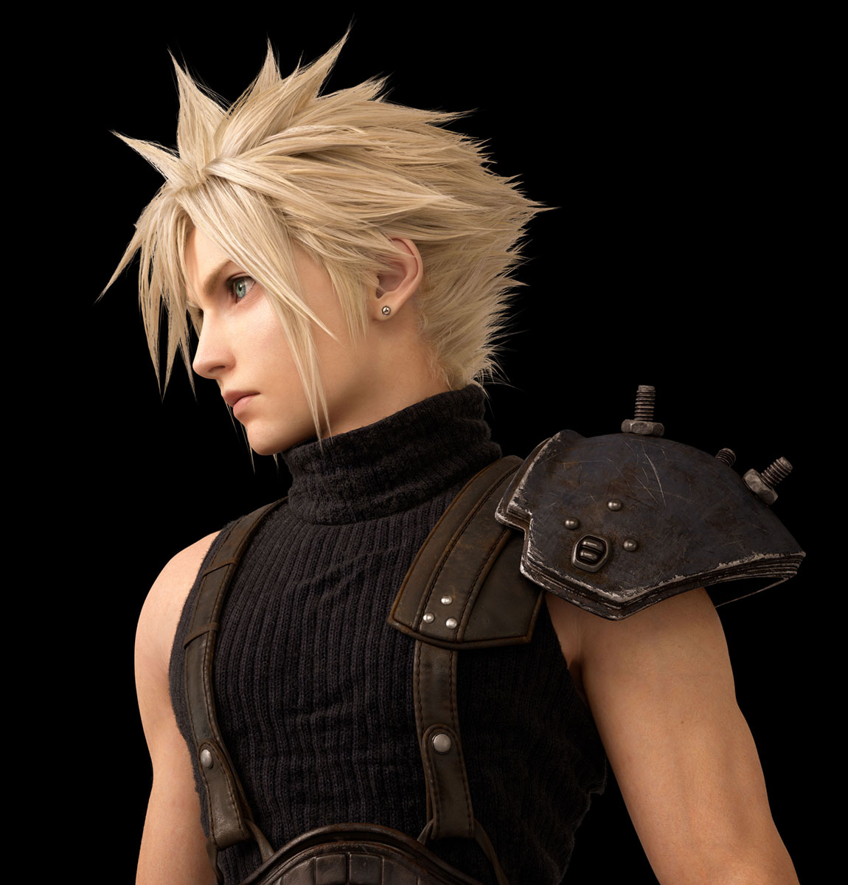Nasceu na pequena cidade de Nibelheim, quando pequeno, sonhou em entrar para a SOLDIER (exército de elite da SHINRA) e trabalhar ao lado de Sephiroth. Após alguns incidentes, ele se tornou um mercenário que foi contratado pelo grupo "AVALANCHE", uma força de resistência à Shinra. No decorrer de FFVII (o jogo), ele se torna muito mais engajado na luta pela sobrevivência do planeta proposta pelo grupo. Durante o jogo, ele tenta reconstruir seu passado e descobrir mais sobre si mesmo. Durante os eventos do filme, Cloud prefere viver isolado e repudia o contato humano por conta de sua doença e dos eventos traumáticos durante o jogo. Ele se sente culpado pela morte de Zack, seu melhor amigo, e de Aerith, a garota que Zack amava.
ZACK FAIR
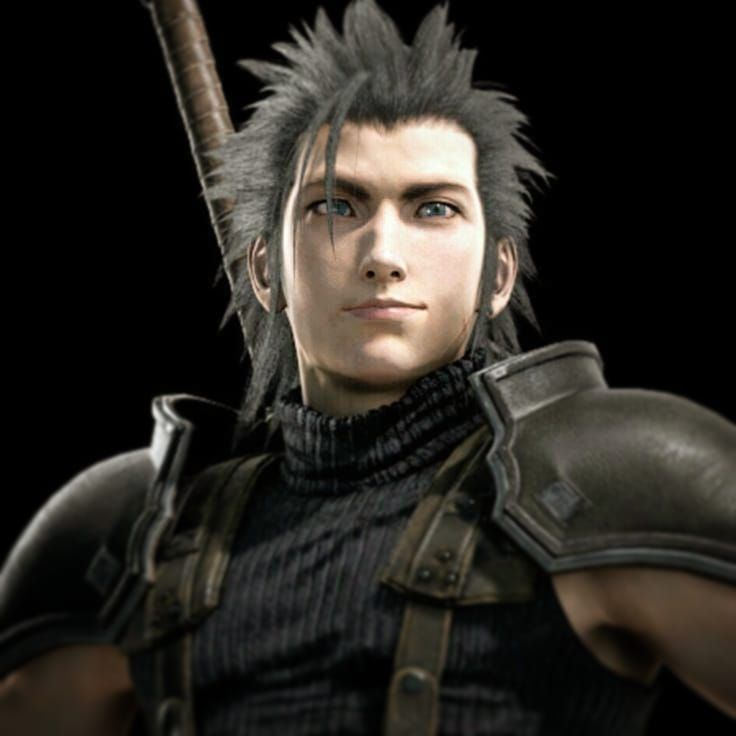Zack Fair é um personagem não-jogável em Final Fantasy VII e o principal protagonista de seu predecessor, Crisis Core -Final Fantasy VII- (e seu remaster CCFFVII Reunion). O segundo portador da Buster Sword antes de Cloud Strife, Em Final Fantasy VII, Zack aparece apenas em flashbacks que retratam como quase idêntico ao Cloud Strife, o protagonista do jogo principal. Nas sequências detalham mais sobre o passado de Cloud e sua conexão com Sephiroth, o vilão do jogo. Em Crisis Core -Final Fantasy VII-, A história e influência de Zack sobre o mundo de Final Fantasy VII são o postos em foco.
TIFA LOCKHART
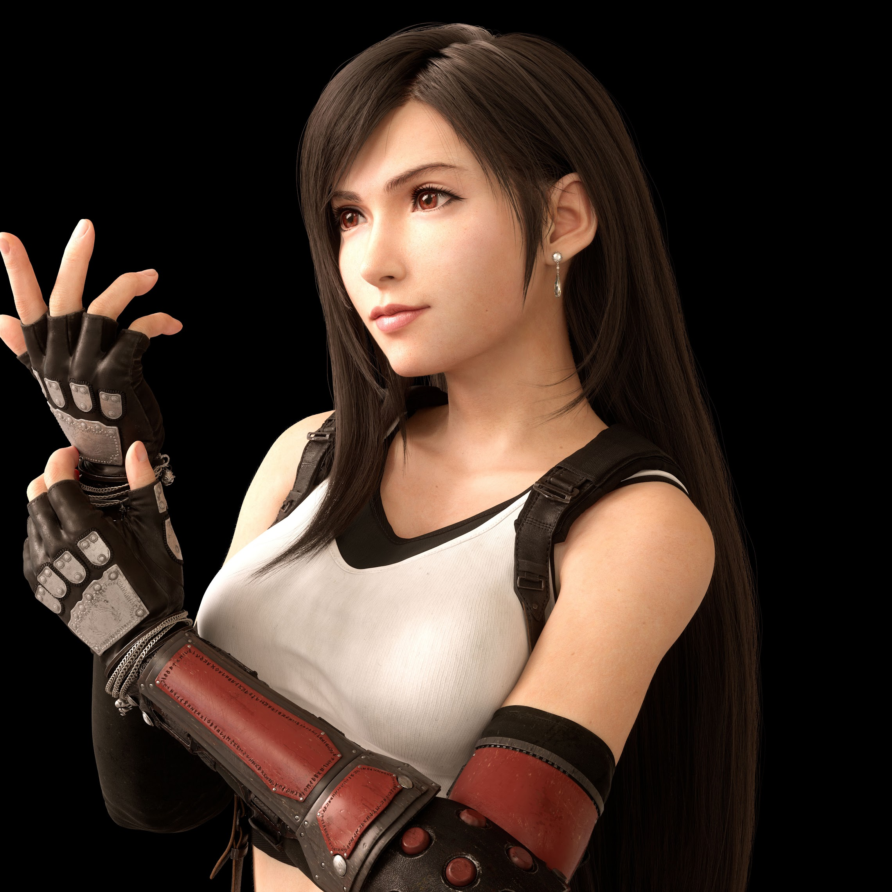Amiga e amor de infância de Cloud e também a única pessoa que sabe de seu passado por inteiro. Luta arte marciais e também foi membro do grupo "AVALANCHE". Voltou a trabalhar no 7th Heaven, bar que possui em um dos setores de Midgar, só que agora ela toma conta dos Órfãos de Midgar e da filha adotiva de Barret, Marlene. Tifa tem uma certa queda por Cloud, e apesar dos eventos traumáticos por que passou (como a morte de seu pai, assassinado por Sephiroth), ela ainda se mostra independente e otimista.
AERITH GAINSBOROUGH
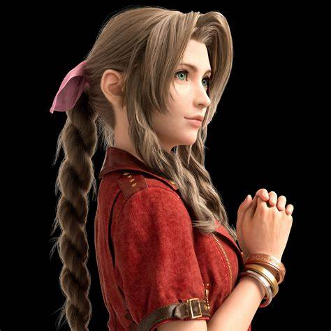Aerith Gainsborough, alternadamente conhecida como Aeris é a última dos Cetra, uma antiga raça com poderosas habilidades mágicas, e por isso a Companhia Shinra a persegue durante toda a sua vida, buscando explorar seus poderes. Ela conhece Cloud Strife em Midgar, e os dois ficam próximos, levando-a a juntar-se à sua missão de combater a Shinra caça o Sephiroth. Aerith é alegre, despreocupada e alegre, flertando com Cloud e também compassiva com os outros.
BARRET WALLACE
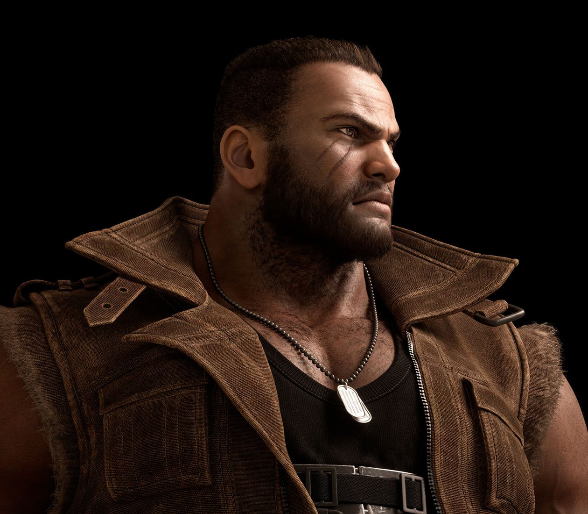Ele o líder do grupo eco-terrorista AVALANCHE, tentando evitar que a Companhia de Energia Elétrica Shinra use Mako, a fonte de vida do planeta Gaia, como uma forma de energia. Sua causa aparentemente benevolente de lutar pelo Planeta é uma desculpa para sua vingança e raiva pessoal, que ele mais tarde deve aceitar. Apesar de sua atitude impetuosa e às vezes violenta, Barret tem um bom coração e está dividida entre lutar e cuidar de sua filha Marlene.
SEPHIROTH
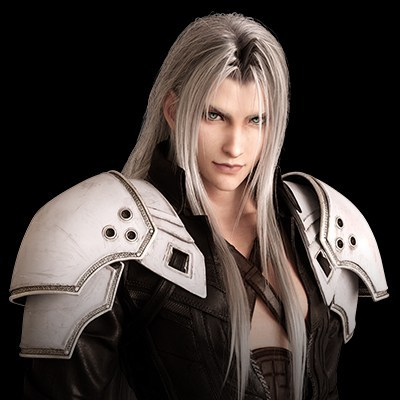Sephiroth foi um dos mais renomados agentes do programa SOLDIER da Companhia de Energia Elétrica Shinra. Seus sucessos no campo de batalha, durante os conflitos em torno da tentativa de Shinra de dominação global, elevaram Sephiroth ao seu status de herói de guerra e de principal garoto-propaganda da Shinra. Porém, ao descobrir suas verdadeiras origens, Sephiroth caiu em loucura e acabou consumido por um ódio mortal do mundo, que jurou destruir. Em Final Fantasy VII, Sephiroth aparece brevemente como um membro do grupo durante um flashback, e é o penúltimo e também último chefe do jogo.
JENOVA
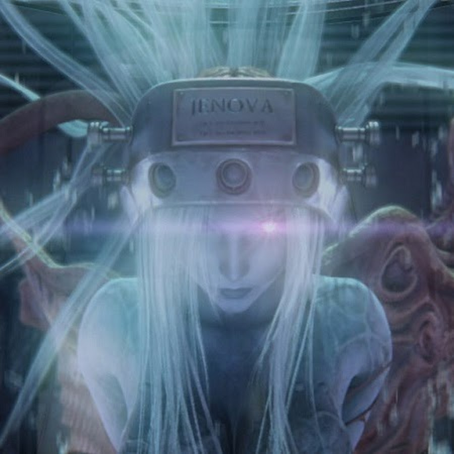Jenova serve como principal antagonista do mundo de Final Fantasy VII e experiências com suas células produziram muitos dos outros antagonistas, como Sephiroth.Ela é chamada de "calamidade dos céus" ou a "crise do céu", ou "prenúncio escuro do céu" pelos Cetra.
RED XIII
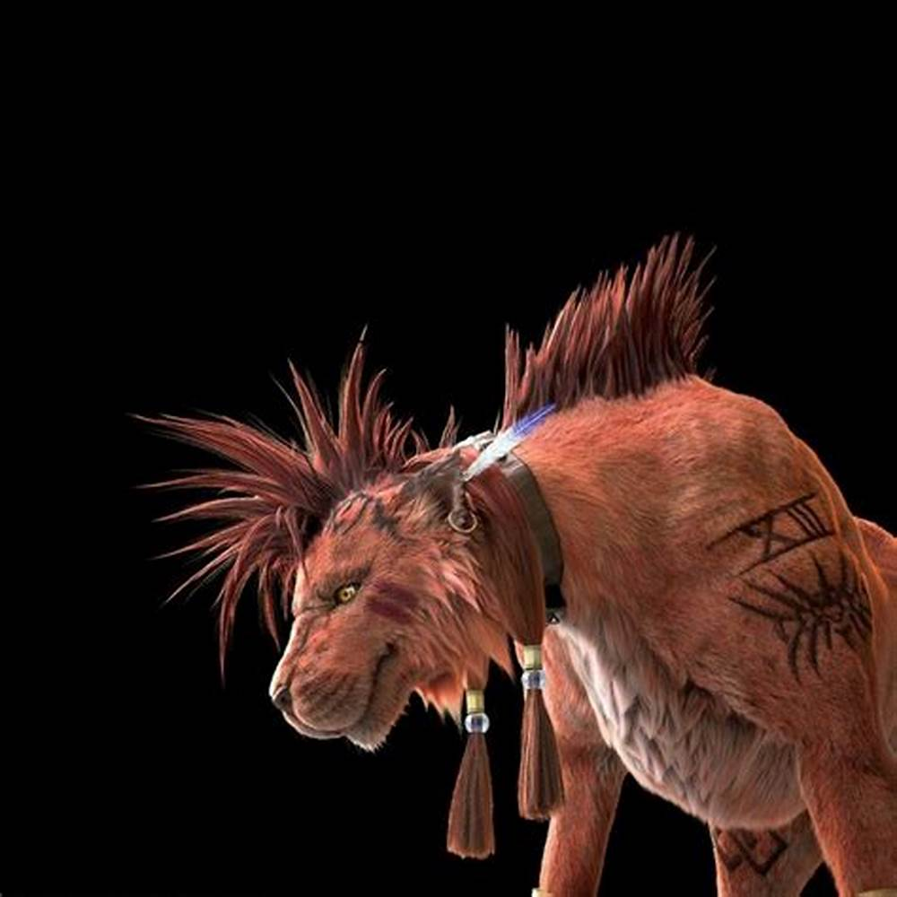Red XIII (nome verdadeiro Nanaki), é um leão vermelho ou uma fera parecida com um lobo e um dos personagens jogáveis em Final Fantasy VII. Red XIII é o nome que ele recebeu como designação de espécime enquanto mantido em cativeiro e experimentado pelo Professor Hojo, e continua sendo o nome que ele é chamado pelo grupo e na batalha em Final Fantasy VII. Ele luta ao lado de Cloud Strife e seus aliados para cumprir seu dever com o planeta de defendê-lo como guerreiro.
VINCENT VALENTINE
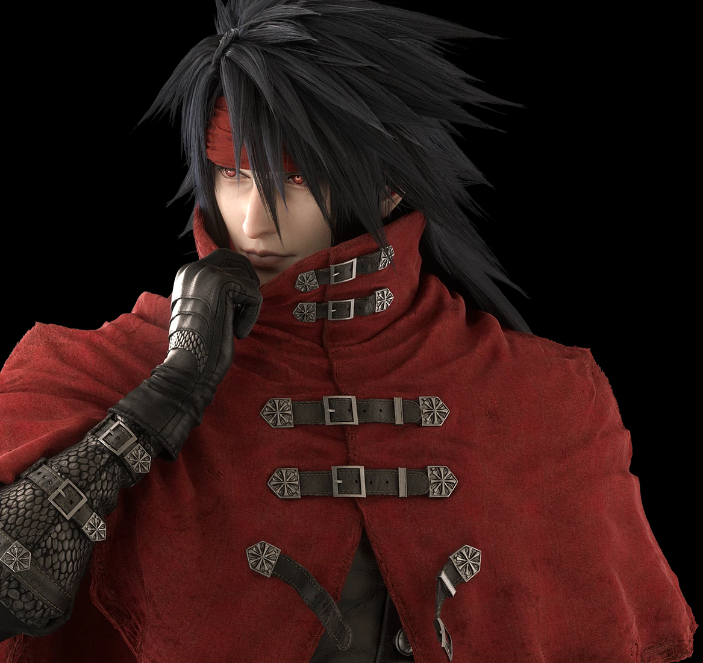Vincent Valentine é um personagem jogável opcional em Final Fantasy VII, e o protagonista de Dirge of Cerberus -Final Fantasy VII-. Um ex-Turk com um passado misterioso. Vincent empunha armas em batalha e seus Limit Breaks o faz mudar de forma, como resultado dos experimentos que o Professor Hojo realizou nele. Desde sua introdução, Vincent se tornou um dos personagens mais populares da Compilação do Final Fantasy VII.
CID HIGHWIND
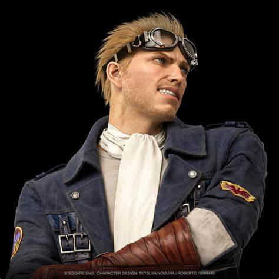Cid é um ex-cientista mecânico que tem um sonho não realizado de enviar um foguete ao espaço. Cid desconfia da Companhia de Energia Elétrica Shinra e, quando um de seus executivos tenta roubar seu avião, o Tiny Bronco, ele se junta a Cloud Strife e seus aliados para lutar contra a Shinra. Cid é o mais grosseiro dos protagonistas: ele xinga, é mal-humorado e fuma cigarros sem parar. No entanto, ele tem um bom coração e é votado como líder temporário do grupo durante a ausência de Cloud e Tifa.
YUFFIE KISARAGI
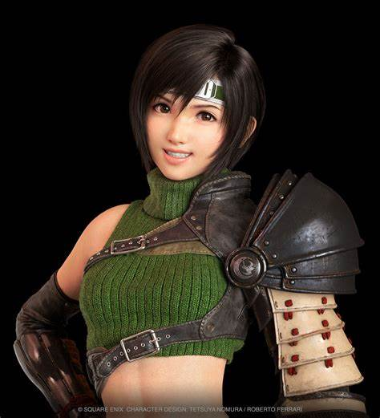Yuffie é uma caçadora de materias, originalmente encontrada em várias florestas do planeta. Como uma ninja travessa e astuta, ela deseja restaurar sua terra natal Wutai à gloriosa nação que era antes de ser conquistada pela Companhia de Energia Elétrica Shinra. Ela inicialmente ajuda o grupo apenas por interesse próprio, antes de fazer amizade com eles e se tornar um membro valioso. Apesar de sua personalidade desagradável, Yuffie é amigável, prestativa, otimista e disposta a ajudar o grupo em suas batalhas.
CAIT SITH
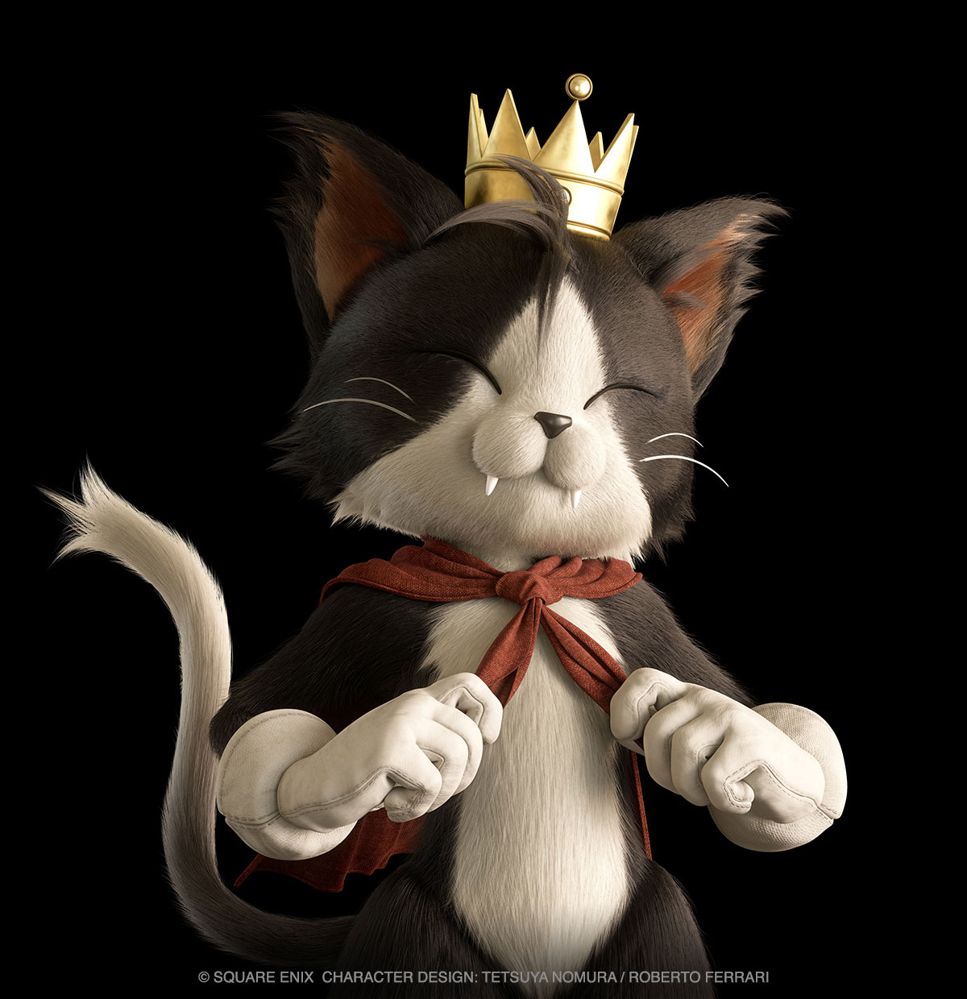Ele é um gato montando em um moogle de pelúcia gigante controlado remotamente por Reeve Tuesti. Ele trabalhou como adivinho no Gold Saucer antes de se juntar ao grupo de Cloud Strife por motivos inicialmente misteriosos. Cait Sith usa megafones para dar ordens ao seu moogle.
RUFUS SHINRA
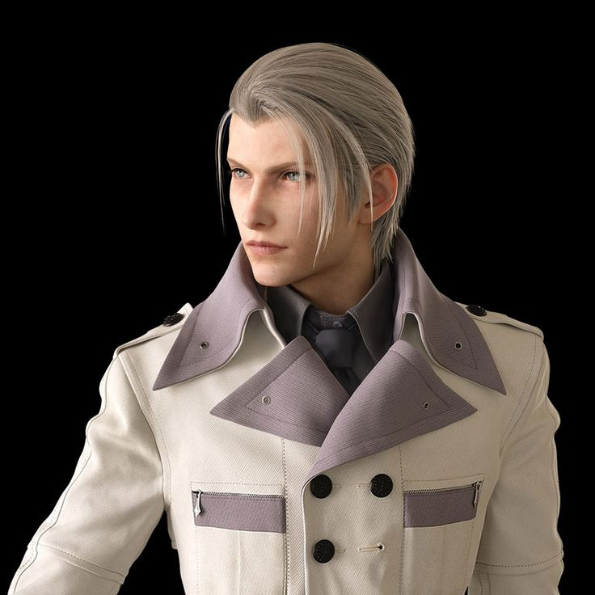Rufus Shinra é o vice-presidente da Companhia de Energia Elétrica Shinra durante Before Crisis -Final Fantasy VII-, Crisis Core -Final Fantasy VII- e Final Fantasy VII, e presidente durante a maior parte de Final Fantasy VII. Eleganhou o título por ser o filho do antigo Presidente Shinra.
BIGGS
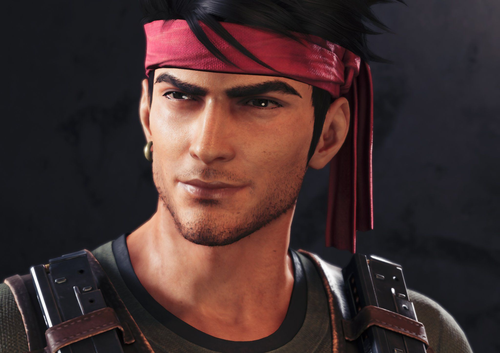Biggs é um membro corajoso e engenhoso da Avalanche, contribuindo com suas habilidades técnicas para as operações do grupo. Sua personalidade otimista e lealdade são evidentes, tornando-o uma presença valiosa para seus companheiros.
WEDGE
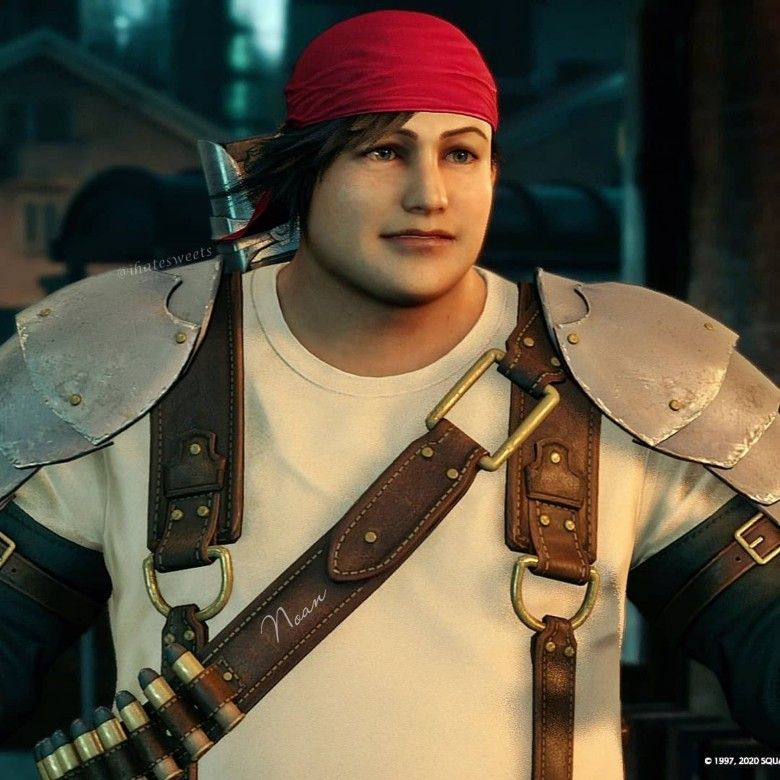wedge é outro membro dedicado da Avalanche. Seu espírito gentil e determinado o coloca ao lado de Biggs nas batalhas contra a Shinra, destacando-se como um aliado confiável.
JESSIE
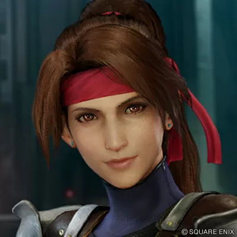Jessie é uma engenheira talentosa e otimista, desempenhando um papel vital nas primeiras missões da Avalanche. Sua paixão por lutar contra a Shinra e seus sonhos de um futuro melhor motivam suas ações, deixando uma impressão duradoura no grupo.